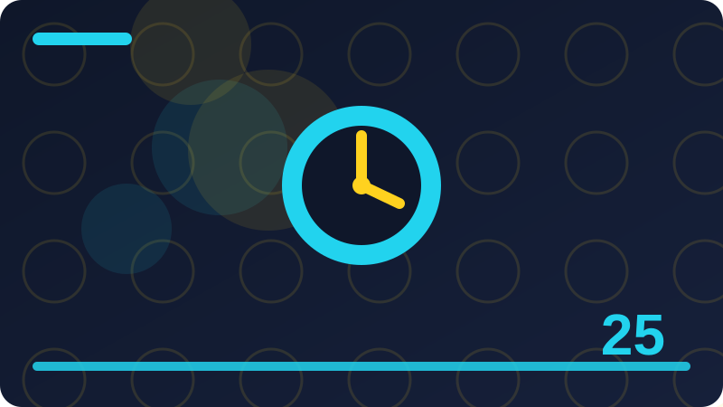

Chapter 25: Lifetimes in Plain Words

Section 1: What a Lifetime Is
Every beginner meets what a lifetime is sooner or later, and most early confusion comes not from difficulty but from rushing past the basics, so this section builds the idea slowly, one step at a time. At its simplest, what a lifetime is answers a practical question: how do you express one small idea in Rust in a form the compiler can check, the program can run, and another reader can follow without guessing? You do not need to memorise every detail in this section on a first reading; focus instead on recognising what a lifetime is when you see it, and on knowing roughly what it does and when to reach for it. Programmers talk about what a lifetime is often because it solves a problem that appears again and again, and naming the idea clearly is the first step toward using it confidently and deliberately.
When you practise what a lifetime is, try writing the example yourself rather than only reading it, because typing forces you to notice punctuation, spelling, and order, and those small details are exactly where beginners learn the most. The example in the code block below is deliberately short, since short examples are easier to test, easier to break on purpose, and easier to fix, and that cycle of testing and fixing is how real understanding forms. It helps to trace the example by hand before you run it: predict the output, write your prediction down, run the program, and compare, because a wrong prediction is not a failure but shows you precisely what to re-read. As you work through what a lifetime is, keep asking what each part contributes; if you removed one line, would the program still work, would it work differently, or would it fail, and that question turns passive reading into active learning.
The most common mistake with what a lifetime is is rushing, since a missing symbol, a wrong type, or a slightly different spelling can stop the compiler or change the result, so check each line slowly and read error messages from the top. Another frequent pitfall is assuming the computer knows what you meant, but it only knows what you wrote, so when what a lifetime is behaves unexpectedly, compare the code you actually typed with the code you intended to type.
In this section, the focus is on what a lifetime is itself: start with a concrete case you can picture, such as a short list of names, numbers, or labels from everyday life, and then express that case in Rust using the idea at hand. Working from a concrete case keeps what a lifetime is grounded, and it gives you something real to check your output against. If the output does not match what you pictured, the gap between the two is a useful clue about which line to re-read, and closing that gap is the real lesson of the section.
fn longest<'a>(x: &'a str, y: &'a str) -> &'a str {
if x.len() >= y.len() { x } else { y }
}
fn main() {
let a = "alpha 1";
let b = "beta";
println!("longest: {}", longest(a, b));
}Check: In your own words, what does what a lifetime is mean, and how would you use it in a small Rust program?
Section 2: Why References Need Lifetimes
At its simplest, why references need lifetimes answers a practical question: how do you express one small idea in Rust in a form the compiler can check, the program can run, and another reader can follow without guessing? You do not need to memorise every detail in this section on a first reading; focus instead on recognising why references need lifetimes when you see it, and on knowing roughly what it does and when to reach for it. Programmers talk about why references need lifetimes often because it solves a problem that appears again and again, and naming the idea clearly is the first step toward using it confidently and deliberately. This section introduces why references need lifetimes, and it is worth slowing down here because this idea will return in almost every program you write from now on, in small ways as well as large ones.
It helps to trace the example by hand before you run it: predict the output, write your prediction down, run the program, and compare, because a wrong prediction is not a failure but shows you precisely what to re-read. As you work through why references need lifetimes, keep asking what each part contributes; if you removed one line, would the program still work, would it work differently, or would it fail, and that question turns passive reading into active learning. Good Rust code reads almost like a description of its own behaviour, so with why references need lifetimes, aim for code that a reader can follow without a long explanation, because clarity today saves confusion when you return to the code later. A useful habit while learning why references need lifetimes is to print intermediate results, since seeing values at each stage makes invisible mistakes visible and builds confidence that each step is doing what you think it does.
When you feel stuck on why references need lifetimes, step back and restate the problem in plain words, then look for the smallest program that still shows the problem, because a small failing example is much easier to reason about than a large one. A helpful review question for why references need lifetimes is whether you could explain your program to someone else line by line, since the lines you cannot explain are usually the lines that need another small experiment.
In this section, the focus is on why references need lifetimes itself: start with a concrete case you can picture, such as a short list of names, numbers, or labels from everyday life, and then express that case in Rust using the idea at hand. Working from a concrete case keeps why references need lifetimes grounded, and it gives you something real to check your output against. If the output does not match what you pictured, the gap between the two is a useful clue about which line to re-read, and closing that gap is the real lesson of the section.
fn longest<'a>(x: &'a str, y: &'a str) -> &'a str {
if x.len() >= y.len() { x } else { y }
}
fn main() {
let a = "alpha 2";
let b = "beta";
println!("longest: {}", longest(a, b));
}Check: In your own words, what does why references need lifetimes mean, and how would you use it in a small Rust program?
Section 3: The Borrow Checker in Plain Words
You do not need to memorise every detail in this section on a first reading; focus instead on recognising the borrow checker in plain words when you see it, and on knowing roughly what it does and when to reach for it. Programmers talk about the borrow checker in plain words often because it solves a problem that appears again and again, and naming the idea clearly is the first step toward using it confidently and deliberately. This section introduces the borrow checker in plain words, and it is worth slowing down here because this idea will return in almost every program you write from now on, in small ways as well as large ones. The central idea is straightforward: the borrow checker in plain words gives you a clear and repeatable way to handle one small part of a program, so you do not have to guess or copy code you do not understand.
Good Rust code reads almost like a description of its own behaviour, so with the borrow checker in plain words, aim for code that a reader can follow without a long explanation, because clarity today saves confusion when you return to the code later. A useful habit while learning the borrow checker in plain words is to print intermediate results, since seeing values at each stage makes invisible mistakes visible and builds confidence that each step is doing what you think it does. Keep your experiments small while you learn the borrow checker in plain words, because a tiny program that you fully understand teaches more than a long program copied from somewhere else that you cannot explain or repair. One of the strengths of learning the borrow checker in plain words this way is that each small experiment gives you immediate feedback, and that feedback loop is what turns a new idea into a skill you can reuse.
Over time, the borrow checker in plain words will start to feel like a familiar pattern rather than a new rule, and you will reach for it naturally whenever the problem it solves appears in a larger program. If your program does not behave as expected, resist the urge to change many things at once; change one thing, rebuild, and test again, so you learn which change actually fixed the problem.
In this section, the focus is on the borrow checker in plain words itself: start with a concrete case you can picture, such as a short list of names, numbers, or labels from everyday life, and then express that case in Rust using the idea at hand. Working from a concrete case keeps the borrow checker in plain words grounded, and it gives you something real to check your output against. If the output does not match what you pictured, the gap between the two is a useful clue about which line to re-read, and closing that gap is the real lesson of the section.
fn longest<'a>(x: &'a str, y: &'a str) -> &'a str {
if x.len() >= y.len() { x } else { y }
}
fn main() {
let a = "alpha 3";
let b = "beta";
println!("longest: {}", longest(a, b));
}Check: In your own words, what does the borrow checker in plain words mean, and how would you use it in a small Rust program?
Section 4: Dangling References Explained
Programmers talk about dangling references explained often because it solves a problem that appears again and again, and naming the idea clearly is the first step toward using it confidently and deliberately. This section introduces dangling references explained, and it is worth slowing down here because this idea will return in almost every program you write from now on, in small ways as well as large ones. The central idea is straightforward: dangling references explained gives you a clear and repeatable way to handle one small part of a program, so you do not have to guess or copy code you do not understand. Think of dangling references explained as one tool in a growing toolkit; on its own it looks modest, but combined with the tools you already know, it lets you express ideas that were awkward or impossible before.
Keep your experiments small while you learn dangling references explained, because a tiny program that you fully understand teaches more than a long program copied from somewhere else that you cannot explain or repair. One of the strengths of learning dangling references explained this way is that each small experiment gives you immediate feedback, and that feedback loop is what turns a new idea into a skill you can reuse. Here is how dangling references explained works in practice: you write a short, precise piece of Rust, the compiler checks that it follows the rules of the language, and then the running program carries it out exactly as written, step by step. Notice the order in which things happen, because Rust does not guess your intention from the whole program at once; it follows instructions in sequence, and dangling references explained fits into that sequence like one instruction in a recipe.
Experienced programmers still make mistakes with dangling references explained; the difference is not that they never err, but that they test early, read messages carefully, and fix one small problem before moving on to the next. The most common mistake with dangling references explained is rushing, since a missing symbol, a wrong type, or a slightly different spelling can stop the compiler or change the result, so check each line slowly and read error messages from the top. Another frequent pitfall is assuming the computer knows what you meant, but it only knows what you wrote, so when dangling references explained behaves unexpectedly, compare the code you actually typed with the code you intended to type.
In this section, the focus is on dangling references explained itself: start with a concrete case you can picture, such as a short list of names, numbers, or labels from everyday life, and then express that case in Rust using the idea at hand. Working from a concrete case keeps dangling references explained grounded, and it gives you something real to check your output against. If the output does not match what you pictured, the gap between the two is a useful clue about which line to re-read, and closing that gap is the real lesson of the section.
fn longest<'a>(x: &'a str, y: &'a str) -> &'a str {
if x.len() >= y.len() { x } else { y }
}
fn main() {
let a = "alpha 4";
let b = "beta";
println!("longest: {}", longest(a, b));
}Check: In your own words, what does dangling references explained mean, and how would you use it in a small Rust program?
Section 5: A Function That Returns a Reference
This section introduces a function that returns a reference, and it is worth slowing down here because this idea will return in almost every program you write from now on, in small ways as well as large ones. The central idea is straightforward: a function that returns a reference gives you a clear and repeatable way to handle one small part of a program, so you do not have to guess or copy code you do not understand. Think of a function that returns a reference as one tool in a growing toolkit; on its own it looks modest, but combined with the tools you already know, it lets you express ideas that were awkward or impossible before. If you can explain a function that returns a reference to a friend in two sentences, you already understand most of what this section needs to teach, and that explanation is a better test than rereading the same page again.
Here is how a function that returns a reference works in practice: you write a short, precise piece of Rust, the compiler checks that it follows the rules of the language, and then the running program carries it out exactly as written, step by step. Notice the order in which things happen, because Rust does not guess your intention from the whole program at once; it follows instructions in sequence, and a function that returns a reference fits into that sequence like one instruction in a recipe. When you practise a function that returns a reference, try writing the example yourself rather than only reading it, because typing forces you to notice punctuation, spelling, and order, and those small details are exactly where beginners learn the most. The example in the code block below is deliberately short, since short examples are easier to test, easier to break on purpose, and easier to fix, and that cycle of testing and fixing is how real understanding forms.
Watch out for details that look unimportant but are not, because in Rust small differences in spelling, ownership, and types often carry real meaning, and a function that returns a reference is no exception to that rule. When you feel stuck on a function that returns a reference, step back and restate the problem in plain words, then look for the smallest program that still shows the problem, because a small failing example is much easier to reason about than a large one.
In this section, the focus is on a function that returns a reference itself: start with a concrete case you can picture, such as a short list of names, numbers, or labels from everyday life, and then express that case in Rust using the idea at hand. Working from a concrete case keeps a function that returns a reference grounded, and it gives you something real to check your output against. If the output does not match what you pictured, the gap between the two is a useful clue about which line to re-read, and closing that gap is the real lesson of the section.
fn longest<'a>(x: &'a str, y: &'a str) -> &'a str {
if x.len() >= y.len() { x } else { y }
}
fn main() {
let a = "alpha 5";
let b = "beta";
println!("longest: {}", longest(a, b));
}Check: In your own words, what does a function that returns a reference mean, and how would you use it in a small Rust program?
Section 6: Lifetime Annotations in Plain Words
The central idea is straightforward: lifetime annotations in plain words gives you a clear and repeatable way to handle one small part of a program, so you do not have to guess or copy code you do not understand. Think of lifetime annotations in plain words as one tool in a growing toolkit; on its own it looks modest, but combined with the tools you already know, it lets you express ideas that were awkward or impossible before. If you can explain lifetime annotations in plain words to a friend in two sentences, you already understand most of what this section needs to teach, and that explanation is a better test than rereading the same page again. A good way to approach lifetime annotations in plain words is to start from the smallest example that runs, study each line, and then change one detail at a time while watching how the output changes in response.
When you practise lifetime annotations in plain words, try writing the example yourself rather than only reading it, because typing forces you to notice punctuation, spelling, and order, and those small details are exactly where beginners learn the most. The example in the code block below is deliberately short, since short examples are easier to test, easier to break on purpose, and easier to fix, and that cycle of testing and fixing is how real understanding forms. It helps to trace the example by hand before you run it: predict the output, write your prediction down, run the program, and compare, because a wrong prediction is not a failure but shows you precisely what to re-read. As you work through lifetime annotations in plain words, keep asking what each part contributes; if you removed one line, would the program still work, would it work differently, or would it fail, and that question turns passive reading into active learning.
Practice matters more than perfection here, so write several tiny programs using lifetime annotations in plain words, vary one thing in each, and keep the versions that teach you something, even when the first attempts do not work. Over time, lifetime annotations in plain words will start to feel like a familiar pattern rather than a new rule, and you will reach for it naturally whenever the problem it solves appears in a larger program.
In this section, the focus is on lifetime annotations in plain words itself: start with a concrete case you can picture, such as a short list of names, numbers, or labels from everyday life, and then express that case in Rust using the idea at hand. Working from a concrete case keeps lifetime annotations in plain words grounded, and it gives you something real to check your output against. If the output does not match what you pictured, the gap between the two is a useful clue about which line to re-read, and closing that gap is the real lesson of the section.
fn longest<'a>(x: &'a str, y: &'a str) -> &'a str {
if x.len() >= y.len() { x } else { y }
}
fn main() {
let a = "alpha 6";
let b = "beta";
println!("longest: {}", longest(a, b));
}Check: In your own words, what does lifetime annotations in plain words mean, and how would you use it in a small Rust program?
Section 7: Reading a Lifetime Annotation
Think of reading a lifetime annotation as one tool in a growing toolkit; on its own it looks modest, but combined with the tools you already know, it lets you express ideas that were awkward or impossible before. If you can explain reading a lifetime annotation to a friend in two sentences, you already understand most of what this section needs to teach, and that explanation is a better test than rereading the same page again. A good way to approach reading a lifetime annotation is to start from the smallest example that runs, study each line, and then change one detail at a time while watching how the output changes in response. Before you write any code, it helps to say in plain words what reading a lifetime annotation is for, because a clear sentence in your head makes the code that follows much easier to write and to read back later.
It helps to trace the example by hand before you run it: predict the output, write your prediction down, run the program, and compare, because a wrong prediction is not a failure but shows you precisely what to re-read. As you work through reading a lifetime annotation, keep asking what each part contributes; if you removed one line, would the program still work, would it work differently, or would it fail, and that question turns passive reading into active learning. Good Rust code reads almost like a description of its own behaviour, so with reading a lifetime annotation, aim for code that a reader can follow without a long explanation, because clarity today saves confusion when you return to the code later. A useful habit while learning reading a lifetime annotation is to print intermediate results, since seeing values at each stage makes invisible mistakes visible and builds confidence that each step is doing what you think it does.
Do not worry if reading a lifetime annotation feels awkward at first, because awkwardness is normal when a new idea is still unfamiliar, and it fades with a few small programs rather than with reading the same explanation many more times. Experienced programmers still make mistakes with reading a lifetime annotation; the difference is not that they never err, but that they test early, read messages carefully, and fix one small problem before moving on to the next.
In this section, the focus is on reading a lifetime annotation itself: start with a concrete case you can picture, such as a short list of names, numbers, or labels from everyday life, and then express that case in Rust using the idea at hand. Working from a concrete case keeps reading a lifetime annotation grounded, and it gives you something real to check your output against. If the output does not match what you pictured, the gap between the two is a useful clue about which line to re-read, and closing that gap is the real lesson of the section.
fn longest<'a>(x: &'a str, y: &'a str) -> &'a str {
if x.len() >= y.len() { x } else { y }
}
fn main() {
let a = "alpha 7";
let b = "beta";
println!("longest: {}", longest(a, b));
}Check: In your own words, what does reading a lifetime annotation mean, and how would you use it in a small Rust program?
Section 8: One Lifetime for Two Inputs
If you can explain one lifetime for two inputs to a friend in two sentences, you already understand most of what this section needs to teach, and that explanation is a better test than rereading the same page again. A good way to approach one lifetime for two inputs is to start from the smallest example that runs, study each line, and then change one detail at a time while watching how the output changes in response. Before you write any code, it helps to say in plain words what one lifetime for two inputs is for, because a clear sentence in your head makes the code that follows much easier to write and to read back later. Every beginner meets one lifetime for two inputs sooner or later, and most early confusion comes not from difficulty but from rushing past the basics, so this section builds the idea slowly, one step at a time.
Good Rust code reads almost like a description of its own behaviour, so with one lifetime for two inputs, aim for code that a reader can follow without a long explanation, because clarity today saves confusion when you return to the code later. A useful habit while learning one lifetime for two inputs is to print intermediate results, since seeing values at each stage makes invisible mistakes visible and builds confidence that each step is doing what you think it does. Keep your experiments small while you learn one lifetime for two inputs, because a tiny program that you fully understand teaches more than a long program copied from somewhere else that you cannot explain or repair. One of the strengths of learning one lifetime for two inputs this way is that each small experiment gives you immediate feedback, and that feedback loop is what turns a new idea into a skill you can reuse.
Another frequent pitfall is assuming the computer knows what you meant, but it only knows what you wrote, so when one lifetime for two inputs behaves unexpectedly, compare the code you actually typed with the code you intended to type. Watch out for details that look unimportant but are not, because in Rust small differences in spelling, ownership, and types often carry real meaning, and one lifetime for two inputs is no exception to that rule.
In this section, the focus is on one lifetime for two inputs itself: start with a concrete case you can picture, such as a short list of names, numbers, or labels from everyday life, and then express that case in Rust using the idea at hand. Working from a concrete case keeps one lifetime for two inputs grounded, and it gives you something real to check your output against. If the output does not match what you pictured, the gap between the two is a useful clue about which line to re-read, and closing that gap is the real lesson of the section.
fn longest<'a>(x: &'a str, y: &'a str) -> &'a str {
if x.len() >= y.len() { x } else { y }
}
fn main() {
let a = "alpha 8";
let b = "beta";
println!("longest: {}", longest(a, b));
}Check: In your own words, what does one lifetime for two inputs mean, and how would you use it in a small Rust program?
Section 9: Two Different Lifetimes
A good way to approach two different lifetimes is to start from the smallest example that runs, study each line, and then change one detail at a time while watching how the output changes in response. Before you write any code, it helps to say in plain words what two different lifetimes is for, because a clear sentence in your head makes the code that follows much easier to write and to read back later. Every beginner meets two different lifetimes sooner or later, and most early confusion comes not from difficulty but from rushing past the basics, so this section builds the idea slowly, one step at a time. At its simplest, two different lifetimes answers a practical question: how do you express one small idea in Rust in a form the compiler can check, the program can run, and another reader can follow without guessing?
Keep your experiments small while you learn two different lifetimes, because a tiny program that you fully understand teaches more than a long program copied from somewhere else that you cannot explain or repair. One of the strengths of learning two different lifetimes this way is that each small experiment gives you immediate feedback, and that feedback loop is what turns a new idea into a skill you can reuse. Here is how two different lifetimes works in practice: you write a short, precise piece of Rust, the compiler checks that it follows the rules of the language, and then the running program carries it out exactly as written, step by step. Notice the order in which things happen, because Rust does not guess your intention from the whole program at once; it follows instructions in sequence, and two different lifetimes fits into that sequence like one instruction in a recipe.
A helpful review question for two different lifetimes is whether you could explain your program to someone else line by line, since the lines you cannot explain are usually the lines that need another small experiment. Practice matters more than perfection here, so write several tiny programs using two different lifetimes, vary one thing in each, and keep the versions that teach you something, even when the first attempts do not work. Over time, two different lifetimes will start to feel like a familiar pattern rather than a new rule, and you will reach for it naturally whenever the problem it solves appears in a larger program.
In this section, the focus is on two different lifetimes itself: start with a concrete case you can picture, such as a short list of names, numbers, or labels from everyday life, and then express that case in Rust using the idea at hand. Working from a concrete case keeps two different lifetimes grounded, and it gives you something real to check your output against. If the output does not match what you pictured, the gap between the two is a useful clue about which line to re-read, and closing that gap is the real lesson of the section.
fn longest<'a>(x: &'a str, y: &'a str) -> &'a str {
if x.len() >= y.len() { x } else { y }
}
fn main() {
let a = "alpha 9";
let b = "beta";
println!("longest: {}", longest(a, b));
}Check: In your own words, what does two different lifetimes mean, and how would you use it in a small Rust program?
Section 10: Lifetime Elision in Plain Words
Before you write any code, it helps to say in plain words what lifetime elision in plain words is for, because a clear sentence in your head makes the code that follows much easier to write and to read back later. Every beginner meets lifetime elision in plain words sooner or later, and most early confusion comes not from difficulty but from rushing past the basics, so this section builds the idea slowly, one step at a time. At its simplest, lifetime elision in plain words answers a practical question: how do you express one small idea in Rust in a form the compiler can check, the program can run, and another reader can follow without guessing? You do not need to memorise every detail in this section on a first reading; focus instead on recognising lifetime elision in plain words when you see it, and on knowing roughly what it does and when to reach for it.
Here is how lifetime elision in plain words works in practice: you write a short, precise piece of Rust, the compiler checks that it follows the rules of the language, and then the running program carries it out exactly as written, step by step. Notice the order in which things happen, because Rust does not guess your intention from the whole program at once; it follows instructions in sequence, and lifetime elision in plain words fits into that sequence like one instruction in a recipe. When you practise lifetime elision in plain words, try writing the example yourself rather than only reading it, because typing forces you to notice punctuation, spelling, and order, and those small details are exactly where beginners learn the most. The example in the code block below is deliberately short, since short examples are easier to test, easier to break on purpose, and easier to fix, and that cycle of testing and fixing is how real understanding forms.
If your program does not behave as expected, resist the urge to change many things at once; change one thing, rebuild, and test again, so you learn which change actually fixed the problem. Do not worry if lifetime elision in plain words feels awkward at first, because awkwardness is normal when a new idea is still unfamiliar, and it fades with a few small programs rather than with reading the same explanation many more times.
In this section, the focus is on lifetime elision in plain words itself: start with a concrete case you can picture, such as a short list of names, numbers, or labels from everyday life, and then express that case in Rust using the idea at hand. Working from a concrete case keeps lifetime elision in plain words grounded, and it gives you something real to check your output against. If the output does not match what you pictured, the gap between the two is a useful clue about which line to re-read, and closing that gap is the real lesson of the section.
fn longest<'a>(x: &'a str, y: &'a str) -> &'a str {
if x.len() >= y.len() { x } else { y }
}
fn main() {
let a = "alpha 10";
let b = "beta";
println!("longest: {}", longest(a, b));
}Check: In your own words, what does lifetime elision in plain words mean, and how would you use it in a small Rust program?
Section 11: The Three Elision Rules
Every beginner meets the three elision rules sooner or later, and most early confusion comes not from difficulty but from rushing past the basics, so this section builds the idea slowly, one step at a time. At its simplest, the three elision rules answers a practical question: how do you express one small idea in Rust in a form the compiler can check, the program can run, and another reader can follow without guessing? You do not need to memorise every detail in this section on a first reading; focus instead on recognising the three elision rules when you see it, and on knowing roughly what it does and when to reach for it. Programmers talk about the three elision rules often because it solves a problem that appears again and again, and naming the idea clearly is the first step toward using it confidently and deliberately.
When you practise the three elision rules, try writing the example yourself rather than only reading it, because typing forces you to notice punctuation, spelling, and order, and those small details are exactly where beginners learn the most. The example in the code block below is deliberately short, since short examples are easier to test, easier to break on purpose, and easier to fix, and that cycle of testing and fixing is how real understanding forms. It helps to trace the example by hand before you run it: predict the output, write your prediction down, run the program, and compare, because a wrong prediction is not a failure but shows you precisely what to re-read. As you work through the three elision rules, keep asking what each part contributes; if you removed one line, would the program still work, would it work differently, or would it fail, and that question turns passive reading into active learning.
The most common mistake with the three elision rules is rushing, since a missing symbol, a wrong type, or a slightly different spelling can stop the compiler or change the result, so check each line slowly and read error messages from the top. Another frequent pitfall is assuming the computer knows what you meant, but it only knows what you wrote, so when the three elision rules behaves unexpectedly, compare the code you actually typed with the code you intended to type.
In this section, the focus is on the three elision rules itself: start with a concrete case you can picture, such as a short list of names, numbers, or labels from everyday life, and then express that case in Rust using the idea at hand. Working from a concrete case keeps the three elision rules grounded, and it gives you something real to check your output against. If the output does not match what you pictured, the gap between the two is a useful clue about which line to re-read, and closing that gap is the real lesson of the section.
fn longest<'a>(x: &'a str, y: &'a str) -> &'a str {
if x.len() >= y.len() { x } else { y }
}
fn main() {
let a = "alpha 11";
let b = "beta";
println!("longest: {}", longest(a, b));
}Check: In your own words, what does the three elision rules mean, and how would you use it in a small Rust program?
Section 12: When Elision Is Not Enough
At its simplest, when elision is not enough answers a practical question: how do you express one small idea in Rust in a form the compiler can check, the program can run, and another reader can follow without guessing? You do not need to memorise every detail in this section on a first reading; focus instead on recognising when elision is not enough when you see it, and on knowing roughly what it does and when to reach for it. Programmers talk about when elision is not enough often because it solves a problem that appears again and again, and naming the idea clearly is the first step toward using it confidently and deliberately. This section introduces when elision is not enough, and it is worth slowing down here because this idea will return in almost every program you write from now on, in small ways as well as large ones.
It helps to trace the example by hand before you run it: predict the output, write your prediction down, run the program, and compare, because a wrong prediction is not a failure but shows you precisely what to re-read. As you work through when elision is not enough, keep asking what each part contributes; if you removed one line, would the program still work, would it work differently, or would it fail, and that question turns passive reading into active learning. Good Rust code reads almost like a description of its own behaviour, so with when elision is not enough, aim for code that a reader can follow without a long explanation, because clarity today saves confusion when you return to the code later. A useful habit while learning when elision is not enough is to print intermediate results, since seeing values at each stage makes invisible mistakes visible and builds confidence that each step is doing what you think it does.
When you feel stuck on when elision is not enough, step back and restate the problem in plain words, then look for the smallest program that still shows the problem, because a small failing example is much easier to reason about than a large one. A helpful review question for when elision is not enough is whether you could explain your program to someone else line by line, since the lines you cannot explain are usually the lines that need another small experiment.
In this section, the focus is on when elision is not enough itself: start with a concrete case you can picture, such as a short list of names, numbers, or labels from everyday life, and then express that case in Rust using the idea at hand. Working from a concrete case keeps when elision is not enough grounded, and it gives you something real to check your output against. If the output does not match what you pictured, the gap between the two is a useful clue about which line to re-read, and closing that gap is the real lesson of the section.
fn longest<'a>(x: &'a str, y: &'a str) -> &'a str {
if x.len() >= y.len() { x } else { y }
}
fn main() {
let a = "alpha 12";
let b = "beta";
println!("longest: {}", longest(a, b));
}Check: In your own words, what does when elision is not enough mean, and how would you use it in a small Rust program?
Section 13: Lifetimes in Struct Definitions
You do not need to memorise every detail in this section on a first reading; focus instead on recognising lifetimes in struct definitions when you see it, and on knowing roughly what it does and when to reach for it. Programmers talk about lifetimes in struct definitions often because it solves a problem that appears again and again, and naming the idea clearly is the first step toward using it confidently and deliberately. This section introduces lifetimes in struct definitions, and it is worth slowing down here because this idea will return in almost every program you write from now on, in small ways as well as large ones. The central idea is straightforward: lifetimes in struct definitions gives you a clear and repeatable way to handle one small part of a program, so you do not have to guess or copy code you do not understand.
Good Rust code reads almost like a description of its own behaviour, so with lifetimes in struct definitions, aim for code that a reader can follow without a long explanation, because clarity today saves confusion when you return to the code later. A useful habit while learning lifetimes in struct definitions is to print intermediate results, since seeing values at each stage makes invisible mistakes visible and builds confidence that each step is doing what you think it does. Keep your experiments small while you learn lifetimes in struct definitions, because a tiny program that you fully understand teaches more than a long program copied from somewhere else that you cannot explain or repair. One of the strengths of learning lifetimes in struct definitions this way is that each small experiment gives you immediate feedback, and that feedback loop is what turns a new idea into a skill you can reuse.
Over time, lifetimes in struct definitions will start to feel like a familiar pattern rather than a new rule, and you will reach for it naturally whenever the problem it solves appears in a larger program. If your program does not behave as expected, resist the urge to change many things at once; change one thing, rebuild, and test again, so you learn which change actually fixed the problem. Do not worry if lifetimes in struct definitions feels awkward at first, because awkwardness is normal when a new idea is still unfamiliar, and it fades with a few small programs rather than with reading the same explanation many more times.
In this section, the focus is on lifetimes in struct definitions itself: start with a concrete case you can picture, such as a short list of names, numbers, or labels from everyday life, and then express that case in Rust using the idea at hand. Working from a concrete case keeps lifetimes in struct definitions grounded, and it gives you something real to check your output against. If the output does not match what you pictured, the gap between the two is a useful clue about which line to re-read, and closing that gap is the real lesson of the section.
fn longest<'a>(x: &'a str, y: &'a str) -> &'a str {
if x.len() >= y.len() { x } else { y }
}
fn main() {
let a = "alpha 13";
let b = "beta";
println!("longest: {}", longest(a, b));
}Check: In your own words, what does lifetimes in struct definitions mean, and how would you use it in a small Rust program?
Section 14: A Struct That Holds a Reference
Programmers talk about a struct that holds a reference often because it solves a problem that appears again and again, and naming the idea clearly is the first step toward using it confidently and deliberately. This section introduces a struct that holds a reference, and it is worth slowing down here because this idea will return in almost every program you write from now on, in small ways as well as large ones. The central idea is straightforward: a struct that holds a reference gives you a clear and repeatable way to handle one small part of a program, so you do not have to guess or copy code you do not understand. Think of a struct that holds a reference as one tool in a growing toolkit; on its own it looks modest, but combined with the tools you already know, it lets you express ideas that were awkward or impossible before.
Keep your experiments small while you learn a struct that holds a reference, because a tiny program that you fully understand teaches more than a long program copied from somewhere else that you cannot explain or repair. One of the strengths of learning a struct that holds a reference this way is that each small experiment gives you immediate feedback, and that feedback loop is what turns a new idea into a skill you can reuse. Here is how a struct that holds a reference works in practice: you write a short, precise piece of Rust, the compiler checks that it follows the rules of the language, and then the running program carries it out exactly as written, step by step. Notice the order in which things happen, because Rust does not guess your intention from the whole program at once; it follows instructions in sequence, and a struct that holds a reference fits into that sequence like one instruction in a recipe.
Experienced programmers still make mistakes with a struct that holds a reference; the difference is not that they never err, but that they test early, read messages carefully, and fix one small problem before moving on to the next. The most common mistake with a struct that holds a reference is rushing, since a missing symbol, a wrong type, or a slightly different spelling can stop the compiler or change the result, so check each line slowly and read error messages from the top.
In this section, the focus is on a struct that holds a reference itself: start with a concrete case you can picture, such as a short list of names, numbers, or labels from everyday life, and then express that case in Rust using the idea at hand. Working from a concrete case keeps a struct that holds a reference grounded, and it gives you something real to check your output against. If the output does not match what you pictured, the gap between the two is a useful clue about which line to re-read, and closing that gap is the real lesson of the section.
fn longest<'a>(x: &'a str, y: &'a str) -> &'a str {
if x.len() >= y.len() { x } else { y }
}
fn main() {
let a = "alpha 14";
let b = "beta";
println!("longest: {}", longest(a, b));
}Check: In your own words, what does a struct that holds a reference mean, and how would you use it in a small Rust program?
Section 15: Lifetimes in Methods
This section introduces lifetimes in methods, and it is worth slowing down here because this idea will return in almost every program you write from now on, in small ways as well as large ones. The central idea is straightforward: lifetimes in methods gives you a clear and repeatable way to handle one small part of a program, so you do not have to guess or copy code you do not understand. Think of lifetimes in methods as one tool in a growing toolkit; on its own it looks modest, but combined with the tools you already know, it lets you express ideas that were awkward or impossible before. If you can explain lifetimes in methods to a friend in two sentences, you already understand most of what this section needs to teach, and that explanation is a better test than rereading the same page again.
Here is how lifetimes in methods works in practice: you write a short, precise piece of Rust, the compiler checks that it follows the rules of the language, and then the running program carries it out exactly as written, step by step. Notice the order in which things happen, because Rust does not guess your intention from the whole program at once; it follows instructions in sequence, and lifetimes in methods fits into that sequence like one instruction in a recipe. When you practise lifetimes in methods, try writing the example yourself rather than only reading it, because typing forces you to notice punctuation, spelling, and order, and those small details are exactly where beginners learn the most. The example in the code block below is deliberately short, since short examples are easier to test, easier to break on purpose, and easier to fix, and that cycle of testing and fixing is how real understanding forms.
Watch out for details that look unimportant but are not, because in Rust small differences in spelling, ownership, and types often carry real meaning, and lifetimes in methods is no exception to that rule. When you feel stuck on lifetimes in methods, step back and restate the problem in plain words, then look for the smallest program that still shows the problem, because a small failing example is much easier to reason about than a large one. A helpful review question for lifetimes in methods is whether you could explain your program to someone else line by line, since the lines you cannot explain are usually the lines that need another small experiment.
In this section, the focus is on lifetimes in methods itself: start with a concrete case you can picture, such as a short list of names, numbers, or labels from everyday life, and then express that case in Rust using the idea at hand. Working from a concrete case keeps lifetimes in methods grounded, and it gives you something real to check your output against. If the output does not match what you pictured, the gap between the two is a useful clue about which line to re-read, and closing that gap is the real lesson of the section.
fn longest<'a>(x: &'a str, y: &'a str) -> &'a str {
if x.len() >= y.len() { x } else { y }
}
fn main() {
let a = "alpha 15";
let b = "beta";
println!("longest: {}", longest(a, b));
}Check: In your own words, what does lifetimes in methods mean, and how would you use it in a small Rust program?
Section 16: Lifetimes and Function Arguments
The central idea is straightforward: lifetimes and function arguments gives you a clear and repeatable way to handle one small part of a program, so you do not have to guess or copy code you do not understand. Think of lifetimes and function arguments as one tool in a growing toolkit; on its own it looks modest, but combined with the tools you already know, it lets you express ideas that were awkward or impossible before. If you can explain lifetimes and function arguments to a friend in two sentences, you already understand most of what this section needs to teach, and that explanation is a better test than rereading the same page again. A good way to approach lifetimes and function arguments is to start from the smallest example that runs, study each line, and then change one detail at a time while watching how the output changes in response.
When you practise lifetimes and function arguments, try writing the example yourself rather than only reading it, because typing forces you to notice punctuation, spelling, and order, and those small details are exactly where beginners learn the most. The example in the code block below is deliberately short, since short examples are easier to test, easier to break on purpose, and easier to fix, and that cycle of testing and fixing is how real understanding forms. It helps to trace the example by hand before you run it: predict the output, write your prediction down, run the program, and compare, because a wrong prediction is not a failure but shows you precisely what to re-read. As you work through lifetimes and function arguments, keep asking what each part contributes; if you removed one line, would the program still work, would it work differently, or would it fail, and that question turns passive reading into active learning.
Practice matters more than perfection here, so write several tiny programs using lifetimes and function arguments, vary one thing in each, and keep the versions that teach you something, even when the first attempts do not work. Over time, lifetimes and function arguments will start to feel like a familiar pattern rather than a new rule, and you will reach for it naturally whenever the problem it solves appears in a larger program. If your program does not behave as expected, resist the urge to change many things at once; change one thing, rebuild, and test again, so you learn which change actually fixed the problem.
In this section, the focus is on lifetimes and function arguments itself: start with a concrete case you can picture, such as a short list of names, numbers, or labels from everyday life, and then express that case in Rust using the idea at hand. Working from a concrete case keeps lifetimes and function arguments grounded, and it gives you something real to check your output against. If the output does not match what you pictured, the gap between the two is a useful clue about which line to re-read, and closing that gap is the real lesson of the section.
fn longest<'a>(x: &'a str, y: &'a str) -> &'a str {
if x.len() >= y.len() { x } else { y }
}
fn main() {
let a = "alpha 16";
let b = "beta";
println!("longest: {}", longest(a, b));
}Check: In your own words, what does lifetimes and function arguments mean, and how would you use it in a small Rust program?
Section 17: Lifetimes and Return Values
Think of lifetimes and return values as one tool in a growing toolkit; on its own it looks modest, but combined with the tools you already know, it lets you express ideas that were awkward or impossible before. If you can explain lifetimes and return values to a friend in two sentences, you already understand most of what this section needs to teach, and that explanation is a better test than rereading the same page again. A good way to approach lifetimes and return values is to start from the smallest example that runs, study each line, and then change one detail at a time while watching how the output changes in response. Before you write any code, it helps to say in plain words what lifetimes and return values is for, because a clear sentence in your head makes the code that follows much easier to write and to read back later.
It helps to trace the example by hand before you run it: predict the output, write your prediction down, run the program, and compare, because a wrong prediction is not a failure but shows you precisely what to re-read. As you work through lifetimes and return values, keep asking what each part contributes; if you removed one line, would the program still work, would it work differently, or would it fail, and that question turns passive reading into active learning. Good Rust code reads almost like a description of its own behaviour, so with lifetimes and return values, aim for code that a reader can follow without a long explanation, because clarity today saves confusion when you return to the code later. A useful habit while learning lifetimes and return values is to print intermediate results, since seeing values at each stage makes invisible mistakes visible and builds confidence that each step is doing what you think it does.
Do not worry if lifetimes and return values feels awkward at first, because awkwardness is normal when a new idea is still unfamiliar, and it fades with a few small programs rather than with reading the same explanation many more times. Experienced programmers still make mistakes with lifetimes and return values; the difference is not that they never err, but that they test early, read messages carefully, and fix one small problem before moving on to the next.
In this section, the focus is on lifetimes and return values itself: start with a concrete case you can picture, such as a short list of names, numbers, or labels from everyday life, and then express that case in Rust using the idea at hand. Working from a concrete case keeps lifetimes and return values grounded, and it gives you something real to check your output against. If the output does not match what you pictured, the gap between the two is a useful clue about which line to re-read, and closing that gap is the real lesson of the section.
fn longest<'a>(x: &'a str, y: &'a str) -> &'a str {
if x.len() >= y.len() { x } else { y }
}
fn main() {
let a = "alpha 17";
let b = "beta";
println!("longest: {}", longest(a, b));
}Check: In your own words, what does lifetimes and return values mean, and how would you use it in a small Rust program?
Section 18: The Longest-Lived Input Rule
If you can explain the longest-lived input rule to a friend in two sentences, you already understand most of what this section needs to teach, and that explanation is a better test than rereading the same page again. A good way to approach the longest-lived input rule is to start from the smallest example that runs, study each line, and then change one detail at a time while watching how the output changes in response. Before you write any code, it helps to say in plain words what the longest-lived input rule is for, because a clear sentence in your head makes the code that follows much easier to write and to read back later. Every beginner meets the longest-lived input rule sooner or later, and most early confusion comes not from difficulty but from rushing past the basics, so this section builds the idea slowly, one step at a time.
Good Rust code reads almost like a description of its own behaviour, so with the longest-lived input rule, aim for code that a reader can follow without a long explanation, because clarity today saves confusion when you return to the code later. A useful habit while learning the longest-lived input rule is to print intermediate results, since seeing values at each stage makes invisible mistakes visible and builds confidence that each step is doing what you think it does. Keep your experiments small while you learn the longest-lived input rule, because a tiny program that you fully understand teaches more than a long program copied from somewhere else that you cannot explain or repair. One of the strengths of learning the longest-lived input rule this way is that each small experiment gives you immediate feedback, and that feedback loop is what turns a new idea into a skill you can reuse.
Another frequent pitfall is assuming the computer knows what you meant, but it only knows what you wrote, so when the longest-lived input rule behaves unexpectedly, compare the code you actually typed with the code you intended to type. Watch out for details that look unimportant but are not, because in Rust small differences in spelling, ownership, and types often carry real meaning, and the longest-lived input rule is no exception to that rule.
In this section, the focus is on the longest-lived input rule itself: start with a concrete case you can picture, such as a short list of names, numbers, or labels from everyday life, and then express that case in Rust using the idea at hand. Working from a concrete case keeps the longest-lived input rule grounded, and it gives you something real to check your output against. If the output does not match what you pictured, the gap between the two is a useful clue about which line to re-read, and closing that gap is the real lesson of the section.
fn longest<'a>(x: &'a str, y: &'a str) -> &'a str {
if x.len() >= y.len() { x } else { y }
}
fn main() {
let a = "alpha 18";
let b = "beta";
println!("longest: {}", longest(a, b));
}Check: In your own words, what does the longest-lived input rule mean, and how would you use it in a small Rust program?
Section 19: Shorter Lifetimes and Scope
A good way to approach shorter lifetimes and scope is to start from the smallest example that runs, study each line, and then change one detail at a time while watching how the output changes in response. Before you write any code, it helps to say in plain words what shorter lifetimes and scope is for, because a clear sentence in your head makes the code that follows much easier to write and to read back later. Every beginner meets shorter lifetimes and scope sooner or later, and most early confusion comes not from difficulty but from rushing past the basics, so this section builds the idea slowly, one step at a time. At its simplest, shorter lifetimes and scope answers a practical question: how do you express one small idea in Rust in a form the compiler can check, the program can run, and another reader can follow without guessing?
Keep your experiments small while you learn shorter lifetimes and scope, because a tiny program that you fully understand teaches more than a long program copied from somewhere else that you cannot explain or repair. One of the strengths of learning shorter lifetimes and scope this way is that each small experiment gives you immediate feedback, and that feedback loop is what turns a new idea into a skill you can reuse. Here is how shorter lifetimes and scope works in practice: you write a short, precise piece of Rust, the compiler checks that it follows the rules of the language, and then the running program carries it out exactly as written, step by step. Notice the order in which things happen, because Rust does not guess your intention from the whole program at once; it follows instructions in sequence, and shorter lifetimes and scope fits into that sequence like one instruction in a recipe.
A helpful review question for shorter lifetimes and scope is whether you could explain your program to someone else line by line, since the lines you cannot explain are usually the lines that need another small experiment. Practice matters more than perfection here, so write several tiny programs using shorter lifetimes and scope, vary one thing in each, and keep the versions that teach you something, even when the first attempts do not work. Over time, shorter lifetimes and scope will start to feel like a familiar pattern rather than a new rule, and you will reach for it naturally whenever the problem it solves appears in a larger program.
In this section, the focus is on shorter lifetimes and scope itself: start with a concrete case you can picture, such as a short list of names, numbers, or labels from everyday life, and then express that case in Rust using the idea at hand. Working from a concrete case keeps shorter lifetimes and scope grounded, and it gives you something real to check your output against. If the output does not match what you pictured, the gap between the two is a useful clue about which line to re-read, and closing that gap is the real lesson of the section.
fn longest<'a>(x: &'a str, y: &'a str) -> &'a str {
if x.len() >= y.len() { x } else { y }
}
fn main() {
let a = "alpha 19";
let b = "beta";
println!("longest: {}", longest(a, b));
}Check: In your own words, what does shorter lifetimes and scope mean, and how would you use it in a small Rust program?
Section 20: Nested Scopes and References
Before you write any code, it helps to say in plain words what nested scopes and references is for, because a clear sentence in your head makes the code that follows much easier to write and to read back later. Every beginner meets nested scopes and references sooner or later, and most early confusion comes not from difficulty but from rushing past the basics, so this section builds the idea slowly, one step at a time. At its simplest, nested scopes and references answers a practical question: how do you express one small idea in Rust in a form the compiler can check, the program can run, and another reader can follow without guessing? You do not need to memorise every detail in this section on a first reading; focus instead on recognising nested scopes and references when you see it, and on knowing roughly what it does and when to reach for it.
Here is how nested scopes and references works in practice: you write a short, precise piece of Rust, the compiler checks that it follows the rules of the language, and then the running program carries it out exactly as written, step by step. Notice the order in which things happen, because Rust does not guess your intention from the whole program at once; it follows instructions in sequence, and nested scopes and references fits into that sequence like one instruction in a recipe. When you practise nested scopes and references, try writing the example yourself rather than only reading it, because typing forces you to notice punctuation, spelling, and order, and those small details are exactly where beginners learn the most. The example in the code block below is deliberately short, since short examples are easier to test, easier to break on purpose, and easier to fix, and that cycle of testing and fixing is how real understanding forms.
If your program does not behave as expected, resist the urge to change many things at once; change one thing, rebuild, and test again, so you learn which change actually fixed the problem. Do not worry if nested scopes and references feels awkward at first, because awkwardness is normal when a new idea is still unfamiliar, and it fades with a few small programs rather than with reading the same explanation many more times.
In this section, the focus is on nested scopes and references itself: start with a concrete case you can picture, such as a short list of names, numbers, or labels from everyday life, and then express that case in Rust using the idea at hand. Working from a concrete case keeps nested scopes and references grounded, and it gives you something real to check your output against. If the output does not match what you pictured, the gap between the two is a useful clue about which line to re-read, and closing that gap is the real lesson of the section.
fn longest<'a>(x: &'a str, y: &'a str) -> &'a str {
if x.len() >= y.len() { x } else { y }
}
fn main() {
let a = "alpha 20";
let b = "beta";
println!("longest: {}", longest(a, b));
}Check: In your own words, what does nested scopes and references mean, and how would you use it in a small Rust program?
Section 21: Lifetimes and Mutable References
Every beginner meets lifetimes and mutable references sooner or later, and most early confusion comes not from difficulty but from rushing past the basics, so this section builds the idea slowly, one step at a time. At its simplest, lifetimes and mutable references answers a practical question: how do you express one small idea in Rust in a form the compiler can check, the program can run, and another reader can follow without guessing? You do not need to memorise every detail in this section on a first reading; focus instead on recognising lifetimes and mutable references when you see it, and on knowing roughly what it does and when to reach for it. Programmers talk about lifetimes and mutable references often because it solves a problem that appears again and again, and naming the idea clearly is the first step toward using it confidently and deliberately.
When you practise lifetimes and mutable references, try writing the example yourself rather than only reading it, because typing forces you to notice punctuation, spelling, and order, and those small details are exactly where beginners learn the most. The example in the code block below is deliberately short, since short examples are easier to test, easier to break on purpose, and easier to fix, and that cycle of testing and fixing is how real understanding forms. It helps to trace the example by hand before you run it: predict the output, write your prediction down, run the program, and compare, because a wrong prediction is not a failure but shows you precisely what to re-read. As you work through lifetimes and mutable references, keep asking what each part contributes; if you removed one line, would the program still work, would it work differently, or would it fail, and that question turns passive reading into active learning.
The most common mistake with lifetimes and mutable references is rushing, since a missing symbol, a wrong type, or a slightly different spelling can stop the compiler or change the result, so check each line slowly and read error messages from the top. Another frequent pitfall is assuming the computer knows what you meant, but it only knows what you wrote, so when lifetimes and mutable references behaves unexpectedly, compare the code you actually typed with the code you intended to type.
In this section, the focus is on lifetimes and mutable references itself: start with a concrete case you can picture, such as a short list of names, numbers, or labels from everyday life, and then express that case in Rust using the idea at hand. Working from a concrete case keeps lifetimes and mutable references grounded, and it gives you something real to check your output against. If the output does not match what you pictured, the gap between the two is a useful clue about which line to re-read, and closing that gap is the real lesson of the section.
fn longest<'a>(x: &'a str, y: &'a str) -> &'a str {
if x.len() >= y.len() { x } else { y }
}
fn main() {
let a = "alpha 21";
let b = "beta";
println!("longest: {}", longest(a, b));
}Check: In your own words, what does lifetimes and mutable references mean, and how would you use it in a small Rust program?
Section 22: Lifetimes and String Slices
At its simplest, lifetimes and string slices answers a practical question: how do you express one small idea in Rust in a form the compiler can check, the program can run, and another reader can follow without guessing? You do not need to memorise every detail in this section on a first reading; focus instead on recognising lifetimes and string slices when you see it, and on knowing roughly what it does and when to reach for it. Programmers talk about lifetimes and string slices often because it solves a problem that appears again and again, and naming the idea clearly is the first step toward using it confidently and deliberately. This section introduces lifetimes and string slices, and it is worth slowing down here because this idea will return in almost every program you write from now on, in small ways as well as large ones.
It helps to trace the example by hand before you run it: predict the output, write your prediction down, run the program, and compare, because a wrong prediction is not a failure but shows you precisely what to re-read. As you work through lifetimes and string slices, keep asking what each part contributes; if you removed one line, would the program still work, would it work differently, or would it fail, and that question turns passive reading into active learning. Good Rust code reads almost like a description of its own behaviour, so with lifetimes and string slices, aim for code that a reader can follow without a long explanation, because clarity today saves confusion when you return to the code later. A useful habit while learning lifetimes and string slices is to print intermediate results, since seeing values at each stage makes invisible mistakes visible and builds confidence that each step is doing what you think it does.
When you feel stuck on lifetimes and string slices, step back and restate the problem in plain words, then look for the smallest program that still shows the problem, because a small failing example is much easier to reason about than a large one. A helpful review question for lifetimes and string slices is whether you could explain your program to someone else line by line, since the lines you cannot explain are usually the lines that need another small experiment.
In this section, the focus is on lifetimes and string slices itself: start with a concrete case you can picture, such as a short list of names, numbers, or labels from everyday life, and then express that case in Rust using the idea at hand. Working from a concrete case keeps lifetimes and string slices grounded, and it gives you something real to check your output against. If the output does not match what you pictured, the gap between the two is a useful clue about which line to re-read, and closing that gap is the real lesson of the section.
fn longest<'a>(x: &'a str, y: &'a str) -> &'a str {
if x.len() >= y.len() { x } else { y }
}
fn main() {
let a = "alpha 22";
let b = "beta";
println!("longest: {}", longest(a, b));
}Check: In your own words, what does lifetimes and string slices mean, and how would you use it in a small Rust program?
Section 23: Lifetimes and Vectors
You do not need to memorise every detail in this section on a first reading; focus instead on recognising lifetimes and vectors when you see it, and on knowing roughly what it does and when to reach for it. Programmers talk about lifetimes and vectors often because it solves a problem that appears again and again, and naming the idea clearly is the first step toward using it confidently and deliberately. This section introduces lifetimes and vectors, and it is worth slowing down here because this idea will return in almost every program you write from now on, in small ways as well as large ones. The central idea is straightforward: lifetimes and vectors gives you a clear and repeatable way to handle one small part of a program, so you do not have to guess or copy code you do not understand.
Good Rust code reads almost like a description of its own behaviour, so with lifetimes and vectors, aim for code that a reader can follow without a long explanation, because clarity today saves confusion when you return to the code later. A useful habit while learning lifetimes and vectors is to print intermediate results, since seeing values at each stage makes invisible mistakes visible and builds confidence that each step is doing what you think it does. Keep your experiments small while you learn lifetimes and vectors, because a tiny program that you fully understand teaches more than a long program copied from somewhere else that you cannot explain or repair. One of the strengths of learning lifetimes and vectors this way is that each small experiment gives you immediate feedback, and that feedback loop is what turns a new idea into a skill you can reuse.
Over time, lifetimes and vectors will start to feel like a familiar pattern rather than a new rule, and you will reach for it naturally whenever the problem it solves appears in a larger program. If your program does not behave as expected, resist the urge to change many things at once; change one thing, rebuild, and test again, so you learn which change actually fixed the problem. Do not worry if lifetimes and vectors feels awkward at first, because awkwardness is normal when a new idea is still unfamiliar, and it fades with a few small programs rather than with reading the same explanation many more times.
In this section, the focus is on lifetimes and vectors itself: start with a concrete case you can picture, such as a short list of names, numbers, or labels from everyday life, and then express that case in Rust using the idea at hand. Working from a concrete case keeps lifetimes and vectors grounded, and it gives you something real to check your output against. If the output does not match what you pictured, the gap between the two is a useful clue about which line to re-read, and closing that gap is the real lesson of the section.
fn longest<'a>(x: &'a str, y: &'a str) -> &'a str {
if x.len() >= y.len() { x } else { y }
}
fn main() {
let a = "alpha 23";
let b = "beta";
println!("longest: {}", longest(a, b));
}Check: In your own words, what does lifetimes and vectors mean, and how would you use it in a small Rust program?
Section 24: Lifetimes and Hash Maps
Programmers talk about lifetimes and hash maps often because it solves a problem that appears again and again, and naming the idea clearly is the first step toward using it confidently and deliberately. This section introduces lifetimes and hash maps, and it is worth slowing down here because this idea will return in almost every program you write from now on, in small ways as well as large ones. The central idea is straightforward: lifetimes and hash maps gives you a clear and repeatable way to handle one small part of a program, so you do not have to guess or copy code you do not understand. Think of lifetimes and hash maps as one tool in a growing toolkit; on its own it looks modest, but combined with the tools you already know, it lets you express ideas that were awkward or impossible before.
Keep your experiments small while you learn lifetimes and hash maps, because a tiny program that you fully understand teaches more than a long program copied from somewhere else that you cannot explain or repair. One of the strengths of learning lifetimes and hash maps this way is that each small experiment gives you immediate feedback, and that feedback loop is what turns a new idea into a skill you can reuse. Here is how lifetimes and hash maps works in practice: you write a short, precise piece of Rust, the compiler checks that it follows the rules of the language, and then the running program carries it out exactly as written, step by step. Notice the order in which things happen, because Rust does not guess your intention from the whole program at once; it follows instructions in sequence, and lifetimes and hash maps fits into that sequence like one instruction in a recipe.
Experienced programmers still make mistakes with lifetimes and hash maps; the difference is not that they never err, but that they test early, read messages carefully, and fix one small problem before moving on to the next. The most common mistake with lifetimes and hash maps is rushing, since a missing symbol, a wrong type, or a slightly different spelling can stop the compiler or change the result, so check each line slowly and read error messages from the top. Another frequent pitfall is assuming the computer knows what you meant, but it only knows what you wrote, so when lifetimes and hash maps behaves unexpectedly, compare the code you actually typed with the code you intended to type.
In this section, the focus is on lifetimes and hash maps itself: start with a concrete case you can picture, such as a short list of names, numbers, or labels from everyday life, and then express that case in Rust using the idea at hand. Working from a concrete case keeps lifetimes and hash maps grounded, and it gives you something real to check your output against. If the output does not match what you pictured, the gap between the two is a useful clue about which line to re-read, and closing that gap is the real lesson of the section.
fn longest<'a>(x: &'a str, y: &'a str) -> &'a str {
if x.len() >= y.len() { x } else { y }
}
fn main() {
let a = "alpha 24";
let b = "beta";
println!("longest: {}", longest(a, b));
}Check: In your own words, what does lifetimes and hash maps mean, and how would you use it in a small Rust program?
Section 25: The 'static Lifetime
This section introduces the 'static lifetime, and it is worth slowing down here because this idea will return in almost every program you write from now on, in small ways as well as large ones. The central idea is straightforward: the 'static lifetime gives you a clear and repeatable way to handle one small part of a program, so you do not have to guess or copy code you do not understand. Think of the 'static lifetime as one tool in a growing toolkit; on its own it looks modest, but combined with the tools you already know, it lets you express ideas that were awkward or impossible before. If you can explain the 'static lifetime to a friend in two sentences, you already understand most of what this section needs to teach, and that explanation is a better test than rereading the same page again.
Here is how the 'static lifetime works in practice: you write a short, precise piece of Rust, the compiler checks that it follows the rules of the language, and then the running program carries it out exactly as written, step by step. Notice the order in which things happen, because Rust does not guess your intention from the whole program at once; it follows instructions in sequence, and the 'static lifetime fits into that sequence like one instruction in a recipe. When you practise the 'static lifetime, try writing the example yourself rather than only reading it, because typing forces you to notice punctuation, spelling, and order, and those small details are exactly where beginners learn the most. The example in the code block below is deliberately short, since short examples are easier to test, easier to break on purpose, and easier to fix, and that cycle of testing and fixing is how real understanding forms.
Watch out for details that look unimportant but are not, because in Rust small differences in spelling, ownership, and types often carry real meaning, and the 'static lifetime is no exception to that rule. When you feel stuck on the 'static lifetime, step back and restate the problem in plain words, then look for the smallest program that still shows the problem, because a small failing example is much easier to reason about than a large one. A helpful review question for the 'static lifetime is whether you could explain your program to someone else line by line, since the lines you cannot explain are usually the lines that need another small experiment.
In this section, the focus is on the 'static lifetime itself: start with a concrete case you can picture, such as a short list of names, numbers, or labels from everyday life, and then express that case in Rust using the idea at hand. Working from a concrete case keeps the 'static lifetime grounded, and it gives you something real to check your output against. If the output does not match what you pictured, the gap between the two is a useful clue about which line to re-read, and closing that gap is the real lesson of the section.
fn longest<'a>(x: &'a str, y: &'a str) -> &'a str {
if x.len() >= y.len() { x } else { y }
}
fn main() {
let a = "alpha 25";
let b = "beta";
println!("longest: {}", longest(a, b));
}Check: In your own words, what does the 'static lifetime mean, and how would you use it in a small Rust program?
Section 26: When 'static Is Appropriate
The central idea is straightforward: when 'static is appropriate gives you a clear and repeatable way to handle one small part of a program, so you do not have to guess or copy code you do not understand. Think of when 'static is appropriate as one tool in a growing toolkit; on its own it looks modest, but combined with the tools you already know, it lets you express ideas that were awkward or impossible before. If you can explain when 'static is appropriate to a friend in two sentences, you already understand most of what this section needs to teach, and that explanation is a better test than rereading the same page again. A good way to approach when 'static is appropriate is to start from the smallest example that runs, study each line, and then change one detail at a time while watching how the output changes in response.
When you practise when 'static is appropriate, try writing the example yourself rather than only reading it, because typing forces you to notice punctuation, spelling, and order, and those small details are exactly where beginners learn the most. The example in the code block below is deliberately short, since short examples are easier to test, easier to break on purpose, and easier to fix, and that cycle of testing and fixing is how real understanding forms. It helps to trace the example by hand before you run it: predict the output, write your prediction down, run the program, and compare, because a wrong prediction is not a failure but shows you precisely what to re-read. As you work through when 'static is appropriate, keep asking what each part contributes; if you removed one line, would the program still work, would it work differently, or would it fail, and that question turns passive reading into active learning.
Practice matters more than perfection here, so write several tiny programs using when 'static is appropriate, vary one thing in each, and keep the versions that teach you something, even when the first attempts do not work. Over time, when 'static is appropriate will start to feel like a familiar pattern rather than a new rule, and you will reach for it naturally whenever the problem it solves appears in a larger program. If your program does not behave as expected, resist the urge to change many things at once; change one thing, rebuild, and test again, so you learn which change actually fixed the problem.
In this section, the focus is on when 'static is appropriate itself: start with a concrete case you can picture, such as a short list of names, numbers, or labels from everyday life, and then express that case in Rust using the idea at hand. Working from a concrete case keeps when 'static is appropriate grounded, and it gives you something real to check your output against. If the output does not match what you pictured, the gap between the two is a useful clue about which line to re-read, and closing that gap is the real lesson of the section.
fn longest<'a>(x: &'a str, y: &'a str) -> &'a str {
if x.len() >= y.len() { x } else { y }
}
fn main() {
let a = "alpha 26";
let b = "beta";
println!("longest: {}", longest(a, b));
}Check: In your own words, what does when 'static is appropriate mean, and how would you use it in a small Rust program?
Section 27: Lifetime Bounds in Plain Words
Think of lifetime bounds in plain words as one tool in a growing toolkit; on its own it looks modest, but combined with the tools you already know, it lets you express ideas that were awkward or impossible before. If you can explain lifetime bounds in plain words to a friend in two sentences, you already understand most of what this section needs to teach, and that explanation is a better test than rereading the same page again. A good way to approach lifetime bounds in plain words is to start from the smallest example that runs, study each line, and then change one detail at a time while watching how the output changes in response. Before you write any code, it helps to say in plain words what lifetime bounds in plain words is for, because a clear sentence in your head makes the code that follows much easier to write and to read back later.
It helps to trace the example by hand before you run it: predict the output, write your prediction down, run the program, and compare, because a wrong prediction is not a failure but shows you precisely what to re-read. As you work through lifetime bounds in plain words, keep asking what each part contributes; if you removed one line, would the program still work, would it work differently, or would it fail, and that question turns passive reading into active learning. Good Rust code reads almost like a description of its own behaviour, so with lifetime bounds in plain words, aim for code that a reader can follow without a long explanation, because clarity today saves confusion when you return to the code later. A useful habit while learning lifetime bounds in plain words is to print intermediate results, since seeing values at each stage makes invisible mistakes visible and builds confidence that each step is doing what you think it does.
Do not worry if lifetime bounds in plain words feels awkward at first, because awkwardness is normal when a new idea is still unfamiliar, and it fades with a few small programs rather than with reading the same explanation many more times. Experienced programmers still make mistakes with lifetime bounds in plain words; the difference is not that they never err, but that they test early, read messages carefully, and fix one small problem before moving on to the next.
In this section, the focus is on lifetime bounds in plain words itself: start with a concrete case you can picture, such as a short list of names, numbers, or labels from everyday life, and then express that case in Rust using the idea at hand. Working from a concrete case keeps lifetime bounds in plain words grounded, and it gives you something real to check your output against. If the output does not match what you pictured, the gap between the two is a useful clue about which line to re-read, and closing that gap is the real lesson of the section.
fn longest<'a>(x: &'a str, y: &'a str) -> &'a str {
if x.len() >= y.len() { x } else { y }
}
fn main() {
let a = "alpha 27";
let b = "beta";
println!("longest: {}", longest(a, b));
}Check: In your own words, what does lifetime bounds in plain words mean, and how would you use it in a small Rust program?
Section 28: Lifetimes and Traits
If you can explain lifetimes and traits to a friend in two sentences, you already understand most of what this section needs to teach, and that explanation is a better test than rereading the same page again. A good way to approach lifetimes and traits is to start from the smallest example that runs, study each line, and then change one detail at a time while watching how the output changes in response. Before you write any code, it helps to say in plain words what lifetimes and traits is for, because a clear sentence in your head makes the code that follows much easier to write and to read back later. Every beginner meets lifetimes and traits sooner or later, and most early confusion comes not from difficulty but from rushing past the basics, so this section builds the idea slowly, one step at a time.
Good Rust code reads almost like a description of its own behaviour, so with lifetimes and traits, aim for code that a reader can follow without a long explanation, because clarity today saves confusion when you return to the code later. A useful habit while learning lifetimes and traits is to print intermediate results, since seeing values at each stage makes invisible mistakes visible and builds confidence that each step is doing what you think it does. Keep your experiments small while you learn lifetimes and traits, because a tiny program that you fully understand teaches more than a long program copied from somewhere else that you cannot explain or repair. One of the strengths of learning lifetimes and traits this way is that each small experiment gives you immediate feedback, and that feedback loop is what turns a new idea into a skill you can reuse.
Another frequent pitfall is assuming the computer knows what you meant, but it only knows what you wrote, so when lifetimes and traits behaves unexpectedly, compare the code you actually typed with the code you intended to type. Watch out for details that look unimportant but are not, because in Rust small differences in spelling, ownership, and types often carry real meaning, and lifetimes and traits is no exception to that rule. When you feel stuck on lifetimes and traits, step back and restate the problem in plain words, then look for the smallest program that still shows the problem, because a small failing example is much easier to reason about than a large one.
In this section, the focus is on lifetimes and traits itself: start with a concrete case you can picture, such as a short list of names, numbers, or labels from everyday life, and then express that case in Rust using the idea at hand. Working from a concrete case keeps lifetimes and traits grounded, and it gives you something real to check your output against. If the output does not match what you pictured, the gap between the two is a useful clue about which line to re-read, and closing that gap is the real lesson of the section.
fn longest<'a>(x: &'a str, y: &'a str) -> &'a str {
if x.len() >= y.len() { x } else { y }
}
fn main() {
let a = "alpha 28";
let b = "beta";
println!("longest: {}", longest(a, b));
}Check: In your own words, what does lifetimes and traits mean, and how would you use it in a small Rust program?
Section 29: Lifetimes and Generic Functions
A good way to approach lifetimes and generic functions is to start from the smallest example that runs, study each line, and then change one detail at a time while watching how the output changes in response. Before you write any code, it helps to say in plain words what lifetimes and generic functions is for, because a clear sentence in your head makes the code that follows much easier to write and to read back later. Every beginner meets lifetimes and generic functions sooner or later, and most early confusion comes not from difficulty but from rushing past the basics, so this section builds the idea slowly, one step at a time. At its simplest, lifetimes and generic functions answers a practical question: how do you express one small idea in Rust in a form the compiler can check, the program can run, and another reader can follow without guessing?
Keep your experiments small while you learn lifetimes and generic functions, because a tiny program that you fully understand teaches more than a long program copied from somewhere else that you cannot explain or repair. One of the strengths of learning lifetimes and generic functions this way is that each small experiment gives you immediate feedback, and that feedback loop is what turns a new idea into a skill you can reuse. Here is how lifetimes and generic functions works in practice: you write a short, precise piece of Rust, the compiler checks that it follows the rules of the language, and then the running program carries it out exactly as written, step by step. Notice the order in which things happen, because Rust does not guess your intention from the whole program at once; it follows instructions in sequence, and lifetimes and generic functions fits into that sequence like one instruction in a recipe.
A helpful review question for lifetimes and generic functions is whether you could explain your program to someone else line by line, since the lines you cannot explain are usually the lines that need another small experiment. Practice matters more than perfection here, so write several tiny programs using lifetimes and generic functions, vary one thing in each, and keep the versions that teach you something, even when the first attempts do not work. Over time, lifetimes and generic functions will start to feel like a familiar pattern rather than a new rule, and you will reach for it naturally whenever the problem it solves appears in a larger program.
In this section, the focus is on lifetimes and generic functions itself: start with a concrete case you can picture, such as a short list of names, numbers, or labels from everyday life, and then express that case in Rust using the idea at hand. Working from a concrete case keeps lifetimes and generic functions grounded, and it gives you something real to check your output against. If the output does not match what you pictured, the gap between the two is a useful clue about which line to re-read, and closing that gap is the real lesson of the section.
fn longest<'a>(x: &'a str, y: &'a str) -> &'a str {
if x.len() >= y.len() { x } else { y }
}
fn main() {
let a = "alpha 29";
let b = "beta";
println!("longest: {}", longest(a, b));
}Check: In your own words, what does lifetimes and generic functions mean, and how would you use it in a small Rust program?
Section 30: Lifetimes in Real Programs
Before you write any code, it helps to say in plain words what lifetimes in real programs is for, because a clear sentence in your head makes the code that follows much easier to write and to read back later. Every beginner meets lifetimes in real programs sooner or later, and most early confusion comes not from difficulty but from rushing past the basics, so this section builds the idea slowly, one step at a time. At its simplest, lifetimes in real programs answers a practical question: how do you express one small idea in Rust in a form the compiler can check, the program can run, and another reader can follow without guessing? You do not need to memorise every detail in this section on a first reading; focus instead on recognising lifetimes in real programs when you see it, and on knowing roughly what it does and when to reach for it.
Here is how lifetimes in real programs works in practice: you write a short, precise piece of Rust, the compiler checks that it follows the rules of the language, and then the running program carries it out exactly as written, step by step. Notice the order in which things happen, because Rust does not guess your intention from the whole program at once; it follows instructions in sequence, and lifetimes in real programs fits into that sequence like one instruction in a recipe. When you practise lifetimes in real programs, try writing the example yourself rather than only reading it, because typing forces you to notice punctuation, spelling, and order, and those small details are exactly where beginners learn the most. The example in the code block below is deliberately short, since short examples are easier to test, easier to break on purpose, and easier to fix, and that cycle of testing and fixing is how real understanding forms.
If your program does not behave as expected, resist the urge to change many things at once; change one thing, rebuild, and test again, so you learn which change actually fixed the problem. Do not worry if lifetimes in real programs feels awkward at first, because awkwardness is normal when a new idea is still unfamiliar, and it fades with a few small programs rather than with reading the same explanation many more times.
In this section, the focus is on lifetimes in real programs itself: start with a concrete case you can picture, such as a short list of names, numbers, or labels from everyday life, and then express that case in Rust using the idea at hand. Working from a concrete case keeps lifetimes in real programs grounded, and it gives you something real to check your output against. If the output does not match what you pictured, the gap between the two is a useful clue about which line to re-read, and closing that gap is the real lesson of the section.
fn longest<'a>(x: &'a str, y: &'a str) -> &'a str {
if x.len() >= y.len() { x } else { y }
}
fn main() {
let a = "alpha 30";
let b = "beta";
println!("longest: {}", longest(a, b));
}Check: In your own words, what does lifetimes in real programs mean, and how would you use it in a small Rust program?
Section 31: A Longer-Lived Value, A Shorter Reference
Every beginner meets a longer-lived value, a shorter reference sooner or later, and most early confusion comes not from difficulty but from rushing past the basics, so this section builds the idea slowly, one step at a time. At its simplest, a longer-lived value, a shorter reference answers a practical question: how do you express one small idea in Rust in a form the compiler can check, the program can run, and another reader can follow without guessing? You do not need to memorise every detail in this section on a first reading; focus instead on recognising a longer-lived value, a shorter reference when you see it, and on knowing roughly what it does and when to reach for it. Programmers talk about a longer-lived value, a shorter reference often because it solves a problem that appears again and again, and naming the idea clearly is the first step toward using it confidently and deliberately.
When you practise a longer-lived value, a shorter reference, try writing the example yourself rather than only reading it, because typing forces you to notice punctuation, spelling, and order, and those small details are exactly where beginners learn the most. The example in the code block below is deliberately short, since short examples are easier to test, easier to break on purpose, and easier to fix, and that cycle of testing and fixing is how real understanding forms. It helps to trace the example by hand before you run it: predict the output, write your prediction down, run the program, and compare, because a wrong prediction is not a failure but shows you precisely what to re-read. As you work through a longer-lived value, a shorter reference, keep asking what each part contributes; if you removed one line, would the program still work, would it work differently, or would it fail, and that question turns passive reading into active learning.
The most common mistake with a longer-lived value, a shorter reference is rushing, since a missing symbol, a wrong type, or a slightly different spelling can stop the compiler or change the result, so check each line slowly and read error messages from the top. Another frequent pitfall is assuming the computer knows what you meant, but it only knows what you wrote, so when a longer-lived value, a shorter reference behaves unexpectedly, compare the code you actually typed with the code you intended to type.
In this section, the focus is on a longer-lived value, a shorter reference itself: start with a concrete case you can picture, such as a short list of names, numbers, or labels from everyday life, and then express that case in Rust using the idea at hand. Working from a concrete case keeps a longer-lived value, a shorter reference grounded, and it gives you something real to check your output against. If the output does not match what you pictured, the gap between the two is a useful clue about which line to re-read, and closing that gap is the real lesson of the section.
fn longest<'a>(x: &'a str, y: &'a str) -> &'a str {
if x.len() >= y.len() { x } else { y }
}
fn main() {
let a = "alpha 31";
let b = "beta";
println!("longest: {}", longest(a, b));
}Check: In your own words, what does a longer-lived value, a shorter reference mean, and how would you use it in a small Rust program?
Section 32: Returning an Owned Value Instead
At its simplest, returning an owned value instead answers a practical question: how do you express one small idea in Rust in a form the compiler can check, the program can run, and another reader can follow without guessing? You do not need to memorise every detail in this section on a first reading; focus instead on recognising returning an owned value instead when you see it, and on knowing roughly what it does and when to reach for it. Programmers talk about returning an owned value instead often because it solves a problem that appears again and again, and naming the idea clearly is the first step toward using it confidently and deliberately. This section introduces returning an owned value instead, and it is worth slowing down here because this idea will return in almost every program you write from now on, in small ways as well as large ones.
It helps to trace the example by hand before you run it: predict the output, write your prediction down, run the program, and compare, because a wrong prediction is not a failure but shows you precisely what to re-read. As you work through returning an owned value instead, keep asking what each part contributes; if you removed one line, would the program still work, would it work differently, or would it fail, and that question turns passive reading into active learning. Good Rust code reads almost like a description of its own behaviour, so with returning an owned value instead, aim for code that a reader can follow without a long explanation, because clarity today saves confusion when you return to the code later. A useful habit while learning returning an owned value instead is to print intermediate results, since seeing values at each stage makes invisible mistakes visible and builds confidence that each step is doing what you think it does.
When you feel stuck on returning an owned value instead, step back and restate the problem in plain words, then look for the smallest program that still shows the problem, because a small failing example is much easier to reason about than a large one. A helpful review question for returning an owned value instead is whether you could explain your program to someone else line by line, since the lines you cannot explain are usually the lines that need another small experiment.
In this section, the focus is on returning an owned value instead itself: start with a concrete case you can picture, such as a short list of names, numbers, or labels from everyday life, and then express that case in Rust using the idea at hand. Working from a concrete case keeps returning an owned value instead grounded, and it gives you something real to check your output against. If the output does not match what you pictured, the gap between the two is a useful clue about which line to re-read, and closing that gap is the real lesson of the section.
fn longest<'a>(x: &'a str, y: &'a str) -> &'a str {
if x.len() >= y.len() { x } else { y }
}
fn main() {
let a = "alpha 32";
let b = "beta";
println!("longest: {}", longest(a, b));
}Check: In your own words, what does returning an owned value instead mean, and how would you use it in a small Rust program?
Section 33: Fixing a Lifetime Error by Owning Data
You do not need to memorise every detail in this section on a first reading; focus instead on recognising fixing a lifetime error by owning data when you see it, and on knowing roughly what it does and when to reach for it. Programmers talk about fixing a lifetime error by owning data often because it solves a problem that appears again and again, and naming the idea clearly is the first step toward using it confidently and deliberately. This section introduces fixing a lifetime error by owning data, and it is worth slowing down here because this idea will return in almost every program you write from now on, in small ways as well as large ones. The central idea is straightforward: fixing a lifetime error by owning data gives you a clear and repeatable way to handle one small part of a program, so you do not have to guess or copy code you do not understand.
Good Rust code reads almost like a description of its own behaviour, so with fixing a lifetime error by owning data, aim for code that a reader can follow without a long explanation, because clarity today saves confusion when you return to the code later. A useful habit while learning fixing a lifetime error by owning data is to print intermediate results, since seeing values at each stage makes invisible mistakes visible and builds confidence that each step is doing what you think it does. Keep your experiments small while you learn fixing a lifetime error by owning data, because a tiny program that you fully understand teaches more than a long program copied from somewhere else that you cannot explain or repair. One of the strengths of learning fixing a lifetime error by owning data this way is that each small experiment gives you immediate feedback, and that feedback loop is what turns a new idea into a skill you can reuse.
Over time, fixing a lifetime error by owning data will start to feel like a familiar pattern rather than a new rule, and you will reach for it naturally whenever the problem it solves appears in a larger program. If your program does not behave as expected, resist the urge to change many things at once; change one thing, rebuild, and test again, so you learn which change actually fixed the problem.
In this section, the focus is on fixing a lifetime error by owning data itself: start with a concrete case you can picture, such as a short list of names, numbers, or labels from everyday life, and then express that case in Rust using the idea at hand. Working from a concrete case keeps fixing a lifetime error by owning data grounded, and it gives you something real to check your output against. If the output does not match what you pictured, the gap between the two is a useful clue about which line to re-read, and closing that gap is the real lesson of the section.
fn longest<'a>(x: &'a str, y: &'a str) -> &'a str {
if x.len() >= y.len() { x } else { y }
}
fn main() {
let a = "alpha 33";
let b = "beta";
println!("longest: {}", longest(a, b));
}Check: In your own words, what does fixing a lifetime error by owning data mean, and how would you use it in a small Rust program?
Section 34: Fixing a Lifetime Error by Restructuring
Programmers talk about fixing a lifetime error by restructuring often because it solves a problem that appears again and again, and naming the idea clearly is the first step toward using it confidently and deliberately. This section introduces fixing a lifetime error by restructuring, and it is worth slowing down here because this idea will return in almost every program you write from now on, in small ways as well as large ones. The central idea is straightforward: fixing a lifetime error by restructuring gives you a clear and repeatable way to handle one small part of a program, so you do not have to guess or copy code you do not understand. Think of fixing a lifetime error by restructuring as one tool in a growing toolkit; on its own it looks modest, but combined with the tools you already know, it lets you express ideas that were awkward or impossible before.
Keep your experiments small while you learn fixing a lifetime error by restructuring, because a tiny program that you fully understand teaches more than a long program copied from somewhere else that you cannot explain or repair. One of the strengths of learning fixing a lifetime error by restructuring this way is that each small experiment gives you immediate feedback, and that feedback loop is what turns a new idea into a skill you can reuse. Here is how fixing a lifetime error by restructuring works in practice: you write a short, precise piece of Rust, the compiler checks that it follows the rules of the language, and then the running program carries it out exactly as written, step by step. Notice the order in which things happen, because Rust does not guess your intention from the whole program at once; it follows instructions in sequence, and fixing a lifetime error by restructuring fits into that sequence like one instruction in a recipe.
Experienced programmers still make mistakes with fixing a lifetime error by restructuring; the difference is not that they never err, but that they test early, read messages carefully, and fix one small problem before moving on to the next. The most common mistake with fixing a lifetime error by restructuring is rushing, since a missing symbol, a wrong type, or a slightly different spelling can stop the compiler or change the result, so check each line slowly and read error messages from the top.
In this section, the focus is on fixing a lifetime error by restructuring itself: start with a concrete case you can picture, such as a short list of names, numbers, or labels from everyday life, and then express that case in Rust using the idea at hand. Working from a concrete case keeps fixing a lifetime error by restructuring grounded, and it gives you something real to check your output against. If the output does not match what you pictured, the gap between the two is a useful clue about which line to re-read, and closing that gap is the real lesson of the section.
fn longest<'a>(x: &'a str, y: &'a str) -> &'a str {
if x.len() >= y.len() { x } else { y }
}
fn main() {
let a = "alpha 34";
let b = "beta";
println!("longest: {}", longest(a, b));
}Check: In your own words, what does fixing a lifetime error by restructuring mean, and how would you use it in a small Rust program?
Section 35: Reading a Lifetime Error Message
This section introduces reading a lifetime error message, and it is worth slowing down here because this idea will return in almost every program you write from now on, in small ways as well as large ones. The central idea is straightforward: reading a lifetime error message gives you a clear and repeatable way to handle one small part of a program, so you do not have to guess or copy code you do not understand. Think of reading a lifetime error message as one tool in a growing toolkit; on its own it looks modest, but combined with the tools you already know, it lets you express ideas that were awkward or impossible before. If you can explain reading a lifetime error message to a friend in two sentences, you already understand most of what this section needs to teach, and that explanation is a better test than rereading the same page again.
Here is how reading a lifetime error message works in practice: you write a short, precise piece of Rust, the compiler checks that it follows the rules of the language, and then the running program carries it out exactly as written, step by step. Notice the order in which things happen, because Rust does not guess your intention from the whole program at once; it follows instructions in sequence, and reading a lifetime error message fits into that sequence like one instruction in a recipe. When you practise reading a lifetime error message, try writing the example yourself rather than only reading it, because typing forces you to notice punctuation, spelling, and order, and those small details are exactly where beginners learn the most. The example in the code block below is deliberately short, since short examples are easier to test, easier to break on purpose, and easier to fix, and that cycle of testing and fixing is how real understanding forms.
Watch out for details that look unimportant but are not, because in Rust small differences in spelling, ownership, and types often carry real meaning, and reading a lifetime error message is no exception to that rule. When you feel stuck on reading a lifetime error message, step back and restate the problem in plain words, then look for the smallest program that still shows the problem, because a small failing example is much easier to reason about than a large one.
In this section, the focus is on reading a lifetime error message itself: start with a concrete case you can picture, such as a short list of names, numbers, or labels from everyday life, and then express that case in Rust using the idea at hand. Working from a concrete case keeps reading a lifetime error message grounded, and it gives you something real to check your output against. If the output does not match what you pictured, the gap between the two is a useful clue about which line to re-read, and closing that gap is the real lesson of the section.
fn longest<'a>(x: &'a str, y: &'a str) -> &'a str {
if x.len() >= y.len() { x } else { y }
}
fn main() {
let a = "alpha 35";
let b = "beta";
println!("longest: {}", longest(a, b));
}Check: In your own words, what does reading a lifetime error message mean, and how would you use it in a small Rust program?
Section 36: Common Lifetime Mistakes
The central idea is straightforward: common lifetime mistakes gives you a clear and repeatable way to handle one small part of a program, so you do not have to guess or copy code you do not understand. Think of common lifetime mistakes as one tool in a growing toolkit; on its own it looks modest, but combined with the tools you already know, it lets you express ideas that were awkward or impossible before. If you can explain common lifetime mistakes to a friend in two sentences, you already understand most of what this section needs to teach, and that explanation is a better test than rereading the same page again. A good way to approach common lifetime mistakes is to start from the smallest example that runs, study each line, and then change one detail at a time while watching how the output changes in response.
When you practise common lifetime mistakes, try writing the example yourself rather than only reading it, because typing forces you to notice punctuation, spelling, and order, and those small details are exactly where beginners learn the most. The example in the code block below is deliberately short, since short examples are easier to test, easier to break on purpose, and easier to fix, and that cycle of testing and fixing is how real understanding forms. It helps to trace the example by hand before you run it: predict the output, write your prediction down, run the program, and compare, because a wrong prediction is not a failure but shows you precisely what to re-read. As you work through common lifetime mistakes, keep asking what each part contributes; if you removed one line, would the program still work, would it work differently, or would it fail, and that question turns passive reading into active learning.
Practice matters more than perfection here, so write several tiny programs using common lifetime mistakes, vary one thing in each, and keep the versions that teach you something, even when the first attempts do not work. Over time, common lifetime mistakes will start to feel like a familiar pattern rather than a new rule, and you will reach for it naturally whenever the problem it solves appears in a larger program. If your program does not behave as expected, resist the urge to change many things at once; change one thing, rebuild, and test again, so you learn which change actually fixed the problem.
In this section, the focus is on common lifetime mistakes itself: start with a concrete case you can picture, such as a short list of names, numbers, or labels from everyday life, and then express that case in Rust using the idea at hand. Working from a concrete case keeps common lifetime mistakes grounded, and it gives you something real to check your output against. If the output does not match what you pictured, the gap between the two is a useful clue about which line to re-read, and closing that gap is the real lesson of the section.
fn longest<'a>(x: &'a str, y: &'a str) -> &'a str {
if x.len() >= y.len() { x } else { y }
}
fn main() {
let a = "alpha 36";
let b = "beta";
println!("longest: {}", longest(a, b));
}Check: In your own words, what does common lifetime mistakes mean, and how would you use it in a small Rust program?
Section 37: Lifetimes Are Not About Time Passing
Think of lifetimes are not about time passing as one tool in a growing toolkit; on its own it looks modest, but combined with the tools you already know, it lets you express ideas that were awkward or impossible before. If you can explain lifetimes are not about time passing to a friend in two sentences, you already understand most of what this section needs to teach, and that explanation is a better test than rereading the same page again. A good way to approach lifetimes are not about time passing is to start from the smallest example that runs, study each line, and then change one detail at a time while watching how the output changes in response. Before you write any code, it helps to say in plain words what lifetimes are not about time passing is for, because a clear sentence in your head makes the code that follows much easier to write and to read back later.
It helps to trace the example by hand before you run it: predict the output, write your prediction down, run the program, and compare, because a wrong prediction is not a failure but shows you precisely what to re-read. As you work through lifetimes are not about time passing, keep asking what each part contributes; if you removed one line, would the program still work, would it work differently, or would it fail, and that question turns passive reading into active learning. Good Rust code reads almost like a description of its own behaviour, so with lifetimes are not about time passing, aim for code that a reader can follow without a long explanation, because clarity today saves confusion when you return to the code later. A useful habit while learning lifetimes are not about time passing is to print intermediate results, since seeing values at each stage makes invisible mistakes visible and builds confidence that each step is doing what you think it does.
Do not worry if lifetimes are not about time passing feels awkward at first, because awkwardness is normal when a new idea is still unfamiliar, and it fades with a few small programs rather than with reading the same explanation many more times. Experienced programmers still make mistakes with lifetimes are not about time passing; the difference is not that they never err, but that they test early, read messages carefully, and fix one small problem before moving on to the next.
In this section, the focus is on lifetimes are not about time passing itself: start with a concrete case you can picture, such as a short list of names, numbers, or labels from everyday life, and then express that case in Rust using the idea at hand. Working from a concrete case keeps lifetimes are not about time passing grounded, and it gives you something real to check your output against. If the output does not match what you pictured, the gap between the two is a useful clue about which line to re-read, and closing that gap is the real lesson of the section.
fn longest<'a>(x: &'a str, y: &'a str) -> &'a str {
if x.len() >= y.len() { x } else { y }
}
fn main() {
let a = "alpha 37";
let b = "beta";
println!("longest: {}", longest(a, b));
}Check: In your own words, what does lifetimes are not about time passing mean, and how would you use it in a small Rust program?
Section 38: Lifetimes and Safety Guarantees
If you can explain lifetimes and safety guarantees to a friend in two sentences, you already understand most of what this section needs to teach, and that explanation is a better test than rereading the same page again. A good way to approach lifetimes and safety guarantees is to start from the smallest example that runs, study each line, and then change one detail at a time while watching how the output changes in response. Before you write any code, it helps to say in plain words what lifetimes and safety guarantees is for, because a clear sentence in your head makes the code that follows much easier to write and to read back later. Every beginner meets lifetimes and safety guarantees sooner or later, and most early confusion comes not from difficulty but from rushing past the basics, so this section builds the idea slowly, one step at a time.
Good Rust code reads almost like a description of its own behaviour, so with lifetimes and safety guarantees, aim for code that a reader can follow without a long explanation, because clarity today saves confusion when you return to the code later. A useful habit while learning lifetimes and safety guarantees is to print intermediate results, since seeing values at each stage makes invisible mistakes visible and builds confidence that each step is doing what you think it does. Keep your experiments small while you learn lifetimes and safety guarantees, because a tiny program that you fully understand teaches more than a long program copied from somewhere else that you cannot explain or repair. One of the strengths of learning lifetimes and safety guarantees this way is that each small experiment gives you immediate feedback, and that feedback loop is what turns a new idea into a skill you can reuse.
Another frequent pitfall is assuming the computer knows what you meant, but it only knows what you wrote, so when lifetimes and safety guarantees behaves unexpectedly, compare the code you actually typed with the code you intended to type. Watch out for details that look unimportant but are not, because in Rust small differences in spelling, ownership, and types often carry real meaning, and lifetimes and safety guarantees is no exception to that rule.
In this section, the focus is on lifetimes and safety guarantees itself: start with a concrete case you can picture, such as a short list of names, numbers, or labels from everyday life, and then express that case in Rust using the idea at hand. Working from a concrete case keeps lifetimes and safety guarantees grounded, and it gives you something real to check your output against. If the output does not match what you pictured, the gap between the two is a useful clue about which line to re-read, and closing that gap is the real lesson of the section.
fn longest<'a>(x: &'a str, y: &'a str) -> &'a str {
if x.len() >= y.len() { x } else { y }
}
fn main() {
let a = "alpha 38";
let b = "beta";
println!("longest: {}", longest(a, b));
}Check: In your own words, what does lifetimes and safety guarantees mean, and how would you use it in a small Rust program?
Section 39: A Reference That Outlives Its Data
A good way to approach a reference that outlives its data is to start from the smallest example that runs, study each line, and then change one detail at a time while watching how the output changes in response. Before you write any code, it helps to say in plain words what a reference that outlives its data is for, because a clear sentence in your head makes the code that follows much easier to write and to read back later. Every beginner meets a reference that outlives its data sooner or later, and most early confusion comes not from difficulty but from rushing past the basics, so this section builds the idea slowly, one step at a time. At its simplest, a reference that outlives its data answers a practical question: how do you express one small idea in Rust in a form the compiler can check, the program can run, and another reader can follow without guessing?
Keep your experiments small while you learn a reference that outlives its data, because a tiny program that you fully understand teaches more than a long program copied from somewhere else that you cannot explain or repair. One of the strengths of learning a reference that outlives its data this way is that each small experiment gives you immediate feedback, and that feedback loop is what turns a new idea into a skill you can reuse. Here is how a reference that outlives its data works in practice: you write a short, precise piece of Rust, the compiler checks that it follows the rules of the language, and then the running program carries it out exactly as written, step by step. Notice the order in which things happen, because Rust does not guess your intention from the whole program at once; it follows instructions in sequence, and a reference that outlives its data fits into that sequence like one instruction in a recipe.
A helpful review question for a reference that outlives its data is whether you could explain your program to someone else line by line, since the lines you cannot explain are usually the lines that need another small experiment. Practice matters more than perfection here, so write several tiny programs using a reference that outlives its data, vary one thing in each, and keep the versions that teach you something, even when the first attempts do not work.
In this section, the focus is on a reference that outlives its data itself: start with a concrete case you can picture, such as a short list of names, numbers, or labels from everyday life, and then express that case in Rust using the idea at hand. Working from a concrete case keeps a reference that outlives its data grounded, and it gives you something real to check your output against. If the output does not match what you pictured, the gap between the two is a useful clue about which line to re-read, and closing that gap is the real lesson of the section.
fn longest<'a>(x: &'a str, y: &'a str) -> &'a str {
if x.len() >= y.len() { x } else { y }
}
fn main() {
let a = "alpha 39";
let b = "beta";
println!("longest: {}", longest(a, b));
}Check: In your own words, what does a reference that outlives its data mean, and how would you use it in a small Rust program?
Section 40: Shadowing and Lifetimes
Before you write any code, it helps to say in plain words what shadowing and lifetimes is for, because a clear sentence in your head makes the code that follows much easier to write and to read back later. Every beginner meets shadowing and lifetimes sooner or later, and most early confusion comes not from difficulty but from rushing past the basics, so this section builds the idea slowly, one step at a time. At its simplest, shadowing and lifetimes answers a practical question: how do you express one small idea in Rust in a form the compiler can check, the program can run, and another reader can follow without guessing? You do not need to memorise every detail in this section on a first reading; focus instead on recognising shadowing and lifetimes when you see it, and on knowing roughly what it does and when to reach for it.
Here is how shadowing and lifetimes works in practice: you write a short, precise piece of Rust, the compiler checks that it follows the rules of the language, and then the running program carries it out exactly as written, step by step. Notice the order in which things happen, because Rust does not guess your intention from the whole program at once; it follows instructions in sequence, and shadowing and lifetimes fits into that sequence like one instruction in a recipe. When you practise shadowing and lifetimes, try writing the example yourself rather than only reading it, because typing forces you to notice punctuation, spelling, and order, and those small details are exactly where beginners learn the most. The example in the code block below is deliberately short, since short examples are easier to test, easier to break on purpose, and easier to fix, and that cycle of testing and fixing is how real understanding forms.
If your program does not behave as expected, resist the urge to change many things at once; change one thing, rebuild, and test again, so you learn which change actually fixed the problem. Do not worry if shadowing and lifetimes feels awkward at first, because awkwardness is normal when a new idea is still unfamiliar, and it fades with a few small programs rather than with reading the same explanation many more times. Experienced programmers still make mistakes with shadowing and lifetimes; the difference is not that they never err, but that they test early, read messages carefully, and fix one small problem before moving on to the next.
In this section, the focus is on shadowing and lifetimes itself: start with a concrete case you can picture, such as a short list of names, numbers, or labels from everyday life, and then express that case in Rust using the idea at hand. Working from a concrete case keeps shadowing and lifetimes grounded, and it gives you something real to check your output against. If the output does not match what you pictured, the gap between the two is a useful clue about which line to re-read, and closing that gap is the real lesson of the section.
fn longest<'a>(x: &'a str, y: &'a str) -> &'a str {
if x.len() >= y.len() { x } else { y }
}
fn main() {
let a = "alpha 40";
let b = "beta";
println!("longest: {}", longest(a, b));
}Check: In your own words, what does shadowing and lifetimes mean, and how would you use it in a small Rust program?
Section 41: Lifetimes in a Small Text Program
Every beginner meets lifetimes in a small text program sooner or later, and most early confusion comes not from difficulty but from rushing past the basics, so this section builds the idea slowly, one step at a time. At its simplest, lifetimes in a small text program answers a practical question: how do you express one small idea in Rust in a form the compiler can check, the program can run, and another reader can follow without guessing? You do not need to memorise every detail in this section on a first reading; focus instead on recognising lifetimes in a small text program when you see it, and on knowing roughly what it does and when to reach for it. Programmers talk about lifetimes in a small text program often because it solves a problem that appears again and again, and naming the idea clearly is the first step toward using it confidently and deliberately.
When you practise lifetimes in a small text program, try writing the example yourself rather than only reading it, because typing forces you to notice punctuation, spelling, and order, and those small details are exactly where beginners learn the most. The example in the code block below is deliberately short, since short examples are easier to test, easier to break on purpose, and easier to fix, and that cycle of testing and fixing is how real understanding forms. It helps to trace the example by hand before you run it: predict the output, write your prediction down, run the program, and compare, because a wrong prediction is not a failure but shows you precisely what to re-read. As you work through lifetimes in a small text program, keep asking what each part contributes; if you removed one line, would the program still work, would it work differently, or would it fail, and that question turns passive reading into active learning.
The most common mistake with lifetimes in a small text program is rushing, since a missing symbol, a wrong type, or a slightly different spelling can stop the compiler or change the result, so check each line slowly and read error messages from the top. Another frequent pitfall is assuming the computer knows what you meant, but it only knows what you wrote, so when lifetimes in a small text program behaves unexpectedly, compare the code you actually typed with the code you intended to type.
In this section, the focus is on lifetimes in a small text program itself: start with a concrete case you can picture, such as a short list of names, numbers, or labels from everyday life, and then express that case in Rust using the idea at hand. Working from a concrete case keeps lifetimes in a small text program grounded, and it gives you something real to check your output against. If the output does not match what you pictured, the gap between the two is a useful clue about which line to re-read, and closing that gap is the real lesson of the section.
fn longest<'a>(x: &'a str, y: &'a str) -> &'a str {
if x.len() >= y.len() { x } else { y }
}
fn main() {
let a = "alpha 41";
let b = "beta";
println!("longest: {}", longest(a, b));
}Check: In your own words, what does lifetimes in a small text program mean, and how would you use it in a small Rust program?
Section 42: Lifetimes and Struct Methods Together
At its simplest, lifetimes and struct methods together answers a practical question: how do you express one small idea in Rust in a form the compiler can check, the program can run, and another reader can follow without guessing? You do not need to memorise every detail in this section on a first reading; focus instead on recognising lifetimes and struct methods together when you see it, and on knowing roughly what it does and when to reach for it. Programmers talk about lifetimes and struct methods together often because it solves a problem that appears again and again, and naming the idea clearly is the first step toward using it confidently and deliberately. This section introduces lifetimes and struct methods together, and it is worth slowing down here because this idea will return in almost every program you write from now on, in small ways as well as large ones.
It helps to trace the example by hand before you run it: predict the output, write your prediction down, run the program, and compare, because a wrong prediction is not a failure but shows you precisely what to re-read. As you work through lifetimes and struct methods together, keep asking what each part contributes; if you removed one line, would the program still work, would it work differently, or would it fail, and that question turns passive reading into active learning. Good Rust code reads almost like a description of its own behaviour, so with lifetimes and struct methods together, aim for code that a reader can follow without a long explanation, because clarity today saves confusion when you return to the code later. A useful habit while learning lifetimes and struct methods together is to print intermediate results, since seeing values at each stage makes invisible mistakes visible and builds confidence that each step is doing what you think it does.
When you feel stuck on lifetimes and struct methods together, step back and restate the problem in plain words, then look for the smallest program that still shows the problem, because a small failing example is much easier to reason about than a large one. A helpful review question for lifetimes and struct methods together is whether you could explain your program to someone else line by line, since the lines you cannot explain are usually the lines that need another small experiment.
In this section, the focus is on lifetimes and struct methods together itself: start with a concrete case you can picture, such as a short list of names, numbers, or labels from everyday life, and then express that case in Rust using the idea at hand. Working from a concrete case keeps lifetimes and struct methods together grounded, and it gives you something real to check your output against. If the output does not match what you pictured, the gap between the two is a useful clue about which line to re-read, and closing that gap is the real lesson of the section.
fn longest<'a>(x: &'a str, y: &'a str) -> &'a str {
if x.len() >= y.len() { x } else { y }
}
fn main() {
let a = "alpha 42";
let b = "beta";
println!("longest: {}", longest(a, b));
}Check: In your own words, what does lifetimes and struct methods together mean, and how would you use it in a small Rust program?
Section 43: Choosing Owned Data Over References
You do not need to memorise every detail in this section on a first reading; focus instead on recognising choosing owned data over references when you see it, and on knowing roughly what it does and when to reach for it. Programmers talk about choosing owned data over references often because it solves a problem that appears again and again, and naming the idea clearly is the first step toward using it confidently and deliberately. This section introduces choosing owned data over references, and it is worth slowing down here because this idea will return in almost every program you write from now on, in small ways as well as large ones. The central idea is straightforward: choosing owned data over references gives you a clear and repeatable way to handle one small part of a program, so you do not have to guess or copy code you do not understand.
Good Rust code reads almost like a description of its own behaviour, so with choosing owned data over references, aim for code that a reader can follow without a long explanation, because clarity today saves confusion when you return to the code later. A useful habit while learning choosing owned data over references is to print intermediate results, since seeing values at each stage makes invisible mistakes visible and builds confidence that each step is doing what you think it does. Keep your experiments small while you learn choosing owned data over references, because a tiny program that you fully understand teaches more than a long program copied from somewhere else that you cannot explain or repair. One of the strengths of learning choosing owned data over references this way is that each small experiment gives you immediate feedback, and that feedback loop is what turns a new idea into a skill you can reuse.
Over time, choosing owned data over references will start to feel like a familiar pattern rather than a new rule, and you will reach for it naturally whenever the problem it solves appears in a larger program. If your program does not behave as expected, resist the urge to change many things at once; change one thing, rebuild, and test again, so you learn which change actually fixed the problem.
In this section, the focus is on choosing owned data over references itself: start with a concrete case you can picture, such as a short list of names, numbers, or labels from everyday life, and then express that case in Rust using the idea at hand. Working from a concrete case keeps choosing owned data over references grounded, and it gives you something real to check your output against. If the output does not match what you pictured, the gap between the two is a useful clue about which line to re-read, and closing that gap is the real lesson of the section.
fn longest<'a>(x: &'a str, y: &'a str) -> &'a str {
if x.len() >= y.len() { x } else { y }
}
fn main() {
let a = "alpha 43";
let b = "beta";
println!("longest: {}", longest(a, b));
}Check: In your own words, what does choosing owned data over references mean, and how would you use it in a small Rust program?
Section 44: When References Are Worth It
Programmers talk about when references are worth it often because it solves a problem that appears again and again, and naming the idea clearly is the first step toward using it confidently and deliberately. This section introduces when references are worth it, and it is worth slowing down here because this idea will return in almost every program you write from now on, in small ways as well as large ones. The central idea is straightforward: when references are worth it gives you a clear and repeatable way to handle one small part of a program, so you do not have to guess or copy code you do not understand. Think of when references are worth it as one tool in a growing toolkit; on its own it looks modest, but combined with the tools you already know, it lets you express ideas that were awkward or impossible before.
Keep your experiments small while you learn when references are worth it, because a tiny program that you fully understand teaches more than a long program copied from somewhere else that you cannot explain or repair. One of the strengths of learning when references are worth it this way is that each small experiment gives you immediate feedback, and that feedback loop is what turns a new idea into a skill you can reuse. Here is how when references are worth it works in practice: you write a short, precise piece of Rust, the compiler checks that it follows the rules of the language, and then the running program carries it out exactly as written, step by step. Notice the order in which things happen, because Rust does not guess your intention from the whole program at once; it follows instructions in sequence, and when references are worth it fits into that sequence like one instruction in a recipe.
Experienced programmers still make mistakes with when references are worth it; the difference is not that they never err, but that they test early, read messages carefully, and fix one small problem before moving on to the next. The most common mistake with when references are worth it is rushing, since a missing symbol, a wrong type, or a slightly different spelling can stop the compiler or change the result, so check each line slowly and read error messages from the top.
In this section, the focus is on when references are worth it itself: start with a concrete case you can picture, such as a short list of names, numbers, or labels from everyday life, and then express that case in Rust using the idea at hand. Working from a concrete case keeps when references are worth it grounded, and it gives you something real to check your output against. If the output does not match what you pictured, the gap between the two is a useful clue about which line to re-read, and closing that gap is the real lesson of the section.
fn longest<'a>(x: &'a str, y: &'a str) -> &'a str {
if x.len() >= y.len() { x } else { y }
}
fn main() {
let a = "alpha 44";
let b = "beta";
println!("longest: {}", longest(a, b));
}Check: In your own words, what does when references are worth it mean, and how would you use it in a small Rust program?
Section 45: Lifetimes and Nested Function Calls
This section introduces lifetimes and nested function calls, and it is worth slowing down here because this idea will return in almost every program you write from now on, in small ways as well as large ones. The central idea is straightforward: lifetimes and nested function calls gives you a clear and repeatable way to handle one small part of a program, so you do not have to guess or copy code you do not understand. Think of lifetimes and nested function calls as one tool in a growing toolkit; on its own it looks modest, but combined with the tools you already know, it lets you express ideas that were awkward or impossible before. If you can explain lifetimes and nested function calls to a friend in two sentences, you already understand most of what this section needs to teach, and that explanation is a better test than rereading the same page again.
Here is how lifetimes and nested function calls works in practice: you write a short, precise piece of Rust, the compiler checks that it follows the rules of the language, and then the running program carries it out exactly as written, step by step. Notice the order in which things happen, because Rust does not guess your intention from the whole program at once; it follows instructions in sequence, and lifetimes and nested function calls fits into that sequence like one instruction in a recipe. When you practise lifetimes and nested function calls, try writing the example yourself rather than only reading it, because typing forces you to notice punctuation, spelling, and order, and those small details are exactly where beginners learn the most. The example in the code block below is deliberately short, since short examples are easier to test, easier to break on purpose, and easier to fix, and that cycle of testing and fixing is how real understanding forms.
Watch out for details that look unimportant but are not, because in Rust small differences in spelling, ownership, and types often carry real meaning, and lifetimes and nested function calls is no exception to that rule. When you feel stuck on lifetimes and nested function calls, step back and restate the problem in plain words, then look for the smallest program that still shows the problem, because a small failing example is much easier to reason about than a large one.
In this section, the focus is on lifetimes and nested function calls itself: start with a concrete case you can picture, such as a short list of names, numbers, or labels from everyday life, and then express that case in Rust using the idea at hand. Working from a concrete case keeps lifetimes and nested function calls grounded, and it gives you something real to check your output against. If the output does not match what you pictured, the gap between the two is a useful clue about which line to re-read, and closing that gap is the real lesson of the section.
fn longest<'a>(x: &'a str, y: &'a str) -> &'a str {
if x.len() >= y.len() { x } else { y }
}
fn main() {
let a = "alpha 45";
let b = "beta";
println!("longest: {}", longest(a, b));
}Check: In your own words, what does lifetimes and nested function calls mean, and how would you use it in a small Rust program?
Section 46: Lifetime Errors in Larger Programs
The central idea is straightforward: lifetime errors in larger programs gives you a clear and repeatable way to handle one small part of a program, so you do not have to guess or copy code you do not understand. Think of lifetime errors in larger programs as one tool in a growing toolkit; on its own it looks modest, but combined with the tools you already know, it lets you express ideas that were awkward or impossible before. If you can explain lifetime errors in larger programs to a friend in two sentences, you already understand most of what this section needs to teach, and that explanation is a better test than rereading the same page again. A good way to approach lifetime errors in larger programs is to start from the smallest example that runs, study each line, and then change one detail at a time while watching how the output changes in response.
When you practise lifetime errors in larger programs, try writing the example yourself rather than only reading it, because typing forces you to notice punctuation, spelling, and order, and those small details are exactly where beginners learn the most. The example in the code block below is deliberately short, since short examples are easier to test, easier to break on purpose, and easier to fix, and that cycle of testing and fixing is how real understanding forms. It helps to trace the example by hand before you run it: predict the output, write your prediction down, run the program, and compare, because a wrong prediction is not a failure but shows you precisely what to re-read. As you work through lifetime errors in larger programs, keep asking what each part contributes; if you removed one line, would the program still work, would it work differently, or would it fail, and that question turns passive reading into active learning.
Practice matters more than perfection here, so write several tiny programs using lifetime errors in larger programs, vary one thing in each, and keep the versions that teach you something, even when the first attempts do not work. Over time, lifetime errors in larger programs will start to feel like a familiar pattern rather than a new rule, and you will reach for it naturally whenever the problem it solves appears in a larger program.
In this section, the focus is on lifetime errors in larger programs itself: start with a concrete case you can picture, such as a short list of names, numbers, or labels from everyday life, and then express that case in Rust using the idea at hand. Working from a concrete case keeps lifetime errors in larger programs grounded, and it gives you something real to check your output against. If the output does not match what you pictured, the gap between the two is a useful clue about which line to re-read, and closing that gap is the real lesson of the section.
fn longest<'a>(x: &'a str, y: &'a str) -> &'a str {
if x.len() >= y.len() { x } else { y }
}
fn main() {
let a = "alpha 46";
let b = "beta";
println!("longest: {}", longest(a, b));
}Check: In your own words, what does lifetime errors in larger programs mean, and how would you use it in a small Rust program?
Section 47: Lifetimes and Closures
Think of lifetimes and closures as one tool in a growing toolkit; on its own it looks modest, but combined with the tools you already know, it lets you express ideas that were awkward or impossible before. If you can explain lifetimes and closures to a friend in two sentences, you already understand most of what this section needs to teach, and that explanation is a better test than rereading the same page again. A good way to approach lifetimes and closures is to start from the smallest example that runs, study each line, and then change one detail at a time while watching how the output changes in response. Before you write any code, it helps to say in plain words what lifetimes and closures is for, because a clear sentence in your head makes the code that follows much easier to write and to read back later.
It helps to trace the example by hand before you run it: predict the output, write your prediction down, run the program, and compare, because a wrong prediction is not a failure but shows you precisely what to re-read. As you work through lifetimes and closures, keep asking what each part contributes; if you removed one line, would the program still work, would it work differently, or would it fail, and that question turns passive reading into active learning. Good Rust code reads almost like a description of its own behaviour, so with lifetimes and closures, aim for code that a reader can follow without a long explanation, because clarity today saves confusion when you return to the code later. A useful habit while learning lifetimes and closures is to print intermediate results, since seeing values at each stage makes invisible mistakes visible and builds confidence that each step is doing what you think it does.
Do not worry if lifetimes and closures feels awkward at first, because awkwardness is normal when a new idea is still unfamiliar, and it fades with a few small programs rather than with reading the same explanation many more times. Experienced programmers still make mistakes with lifetimes and closures; the difference is not that they never err, but that they test early, read messages carefully, and fix one small problem before moving on to the next.
In this section, the focus is on lifetimes and closures itself: start with a concrete case you can picture, such as a short list of names, numbers, or labels from everyday life, and then express that case in Rust using the idea at hand. Working from a concrete case keeps lifetimes and closures grounded, and it gives you something real to check your output against. If the output does not match what you pictured, the gap between the two is a useful clue about which line to re-read, and closing that gap is the real lesson of the section.
fn longest<'a>(x: &'a str, y: &'a str) -> &'a str {
if x.len() >= y.len() { x } else { y }
}
fn main() {
let a = "alpha 47";
let b = "beta";
println!("longest: {}", longest(a, b));
}Check: In your own words, what does lifetimes and closures mean, and how would you use it in a small Rust program?
Section 48: Lifetimes and Iterators
If you can explain lifetimes and iterators to a friend in two sentences, you already understand most of what this section needs to teach, and that explanation is a better test than rereading the same page again. A good way to approach lifetimes and iterators is to start from the smallest example that runs, study each line, and then change one detail at a time while watching how the output changes in response. Before you write any code, it helps to say in plain words what lifetimes and iterators is for, because a clear sentence in your head makes the code that follows much easier to write and to read back later. Every beginner meets lifetimes and iterators sooner or later, and most early confusion comes not from difficulty but from rushing past the basics, so this section builds the idea slowly, one step at a time.
Good Rust code reads almost like a description of its own behaviour, so with lifetimes and iterators, aim for code that a reader can follow without a long explanation, because clarity today saves confusion when you return to the code later. A useful habit while learning lifetimes and iterators is to print intermediate results, since seeing values at each stage makes invisible mistakes visible and builds confidence that each step is doing what you think it does. Keep your experiments small while you learn lifetimes and iterators, because a tiny program that you fully understand teaches more than a long program copied from somewhere else that you cannot explain or repair. One of the strengths of learning lifetimes and iterators this way is that each small experiment gives you immediate feedback, and that feedback loop is what turns a new idea into a skill you can reuse.
Another frequent pitfall is assuming the computer knows what you meant, but it only knows what you wrote, so when lifetimes and iterators behaves unexpectedly, compare the code you actually typed with the code you intended to type. Watch out for details that look unimportant but are not, because in Rust small differences in spelling, ownership, and types often carry real meaning, and lifetimes and iterators is no exception to that rule. When you feel stuck on lifetimes and iterators, step back and restate the problem in plain words, then look for the smallest program that still shows the problem, because a small failing example is much easier to reason about than a large one.
In this section, the focus is on lifetimes and iterators itself: start with a concrete case you can picture, such as a short list of names, numbers, or labels from everyday life, and then express that case in Rust using the idea at hand. Working from a concrete case keeps lifetimes and iterators grounded, and it gives you something real to check your output against. If the output does not match what you pictured, the gap between the two is a useful clue about which line to re-read, and closing that gap is the real lesson of the section.
fn longest<'a>(x: &'a str, y: &'a str) -> &'a str {
if x.len() >= y.len() { x } else { y }
}
fn main() {
let a = "alpha 48";
let b = "beta";
println!("longest: {}", longest(a, b));
}Check: In your own words, what does lifetimes and iterators mean, and how would you use it in a small Rust program?
Section 49: A Complete Lifetime Program
A good way to approach a complete lifetime program is to start from the smallest example that runs, study each line, and then change one detail at a time while watching how the output changes in response. Before you write any code, it helps to say in plain words what a complete lifetime program is for, because a clear sentence in your head makes the code that follows much easier to write and to read back later. Every beginner meets a complete lifetime program sooner or later, and most early confusion comes not from difficulty but from rushing past the basics, so this section builds the idea slowly, one step at a time. At its simplest, a complete lifetime program answers a practical question: how do you express one small idea in Rust in a form the compiler can check, the program can run, and another reader can follow without guessing?
Keep your experiments small while you learn a complete lifetime program, because a tiny program that you fully understand teaches more than a long program copied from somewhere else that you cannot explain or repair. One of the strengths of learning a complete lifetime program this way is that each small experiment gives you immediate feedback, and that feedback loop is what turns a new idea into a skill you can reuse. Here is how a complete lifetime program works in practice: you write a short, precise piece of Rust, the compiler checks that it follows the rules of the language, and then the running program carries it out exactly as written, step by step. Notice the order in which things happen, because Rust does not guess your intention from the whole program at once; it follows instructions in sequence, and a complete lifetime program fits into that sequence like one instruction in a recipe.
A helpful review question for a complete lifetime program is whether you could explain your program to someone else line by line, since the lines you cannot explain are usually the lines that need another small experiment. Practice matters more than perfection here, so write several tiny programs using a complete lifetime program, vary one thing in each, and keep the versions that teach you something, even when the first attempts do not work. Over time, a complete lifetime program will start to feel like a familiar pattern rather than a new rule, and you will reach for it naturally whenever the problem it solves appears in a larger program.
In this section, the focus is on a complete lifetime program itself: start with a concrete case you can picture, such as a short list of names, numbers, or labels from everyday life, and then express that case in Rust using the idea at hand. Working from a concrete case keeps a complete lifetime program grounded, and it gives you something real to check your output against. If the output does not match what you pictured, the gap between the two is a useful clue about which line to re-read, and closing that gap is the real lesson of the section.
fn longest<'a>(x: &'a str, y: &'a str) -> &'a str {
if x.len() >= y.len() { x } else { y }
}
fn main() {
let a = "alpha 49";
let b = "beta";
println!("longest: {}", longest(a, b));
}Check: In your own words, what does a complete lifetime program mean, and how would you use it in a small Rust program?
Section 50: What You Can Build Next
Before you write any code, it helps to say in plain words what what you can build next is for, because a clear sentence in your head makes the code that follows much easier to write and to read back later. Every beginner meets what you can build next sooner or later, and most early confusion comes not from difficulty but from rushing past the basics, so this section builds the idea slowly, one step at a time. At its simplest, what you can build next answers a practical question: how do you express one small idea in Rust in a form the compiler can check, the program can run, and another reader can follow without guessing? You do not need to memorise every detail in this section on a first reading; focus instead on recognising what you can build next when you see it, and on knowing roughly what it does and when to reach for it.
Here is how what you can build next works in practice: you write a short, precise piece of Rust, the compiler checks that it follows the rules of the language, and then the running program carries it out exactly as written, step by step. Notice the order in which things happen, because Rust does not guess your intention from the whole program at once; it follows instructions in sequence, and what you can build next fits into that sequence like one instruction in a recipe. When you practise what you can build next, try writing the example yourself rather than only reading it, because typing forces you to notice punctuation, spelling, and order, and those small details are exactly where beginners learn the most. The example in the code block below is deliberately short, since short examples are easier to test, easier to break on purpose, and easier to fix, and that cycle of testing and fixing is how real understanding forms.
If your program does not behave as expected, resist the urge to change many things at once; change one thing, rebuild, and test again, so you learn which change actually fixed the problem. Do not worry if what you can build next feels awkward at first, because awkwardness is normal when a new idea is still unfamiliar, and it fades with a few small programs rather than with reading the same explanation many more times.
In this section, the focus is on what you can build next itself: start with a concrete case you can picture, such as a short list of names, numbers, or labels from everyday life, and then express that case in Rust using the idea at hand. Working from a concrete case keeps what you can build next grounded, and it gives you something real to check your output against. If the output does not match what you pictured, the gap between the two is a useful clue about which line to re-read, and closing that gap is the real lesson of the section.
fn longest<'a>(x: &'a str, y: &'a str) -> &'a str {
if x.len() >= y.len() { x } else { y }
}
fn main() {
let a = "alpha 50";
let b = "beta";
println!("longest: {}", longest(a, b));
}Check: In your own words, what does what you can build next mean, and how would you use it in a small Rust program?
Practical Task
Write a function that returns the longer of two string slices with lifetime annotations, a struct that holds a string slice with a lifetime parameter, and a small program that uses both correctly; then deliberately break one lifetime in a copy and read the compiler message before fixing it.
Chapter Questions
- What is a lifetime, in your own words, and what problem does it prevent?
- Why does a function that returns a reference usually need a lifetime annotation?
- What is lifetime elision, and when does it not apply?
- Why does a struct that holds a reference need a lifetime parameter?
- When is returning an owned value a better fix for a lifetime error than adding annotations?
Comments